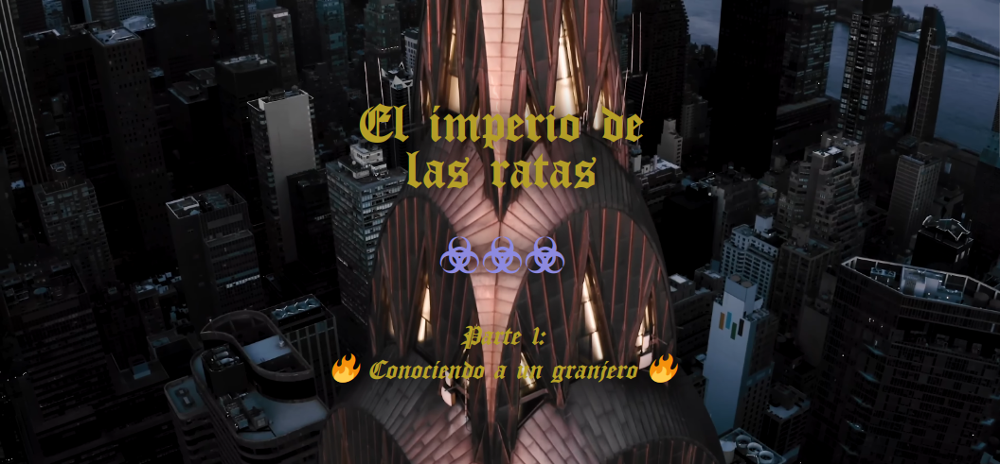
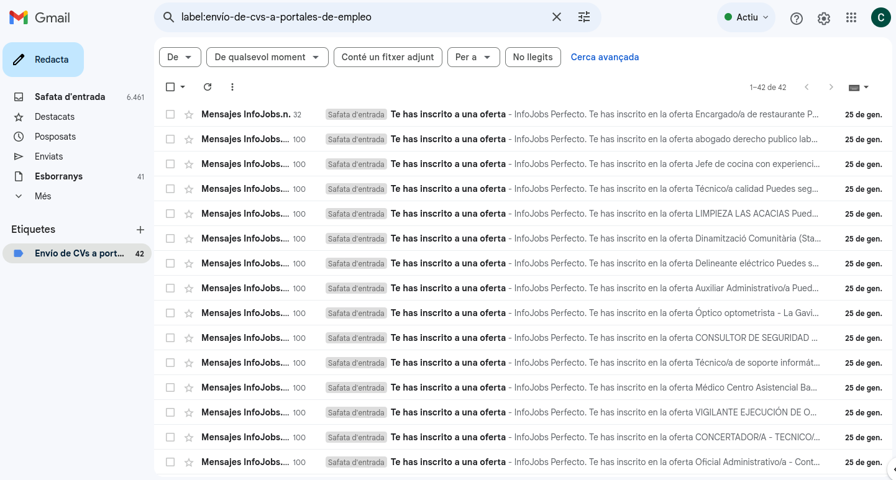
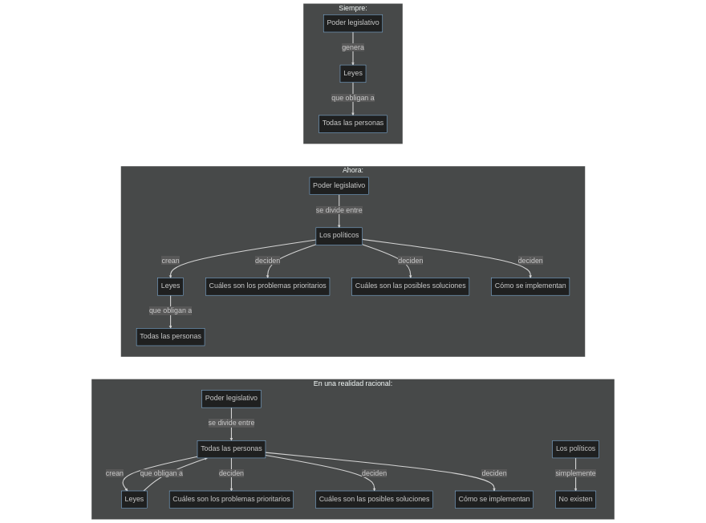
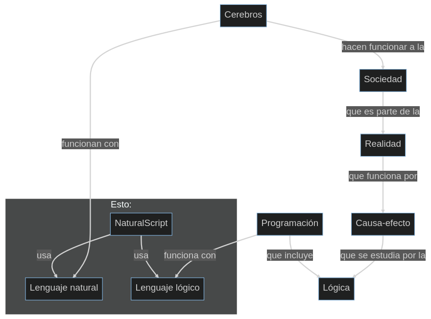

Quieres que mate, ¿verdad? Que me vuelva loco. Que no sepa qué hacer.
No quieres hablar con las personas.
Porque son el problema.
Y la solución.
Y el problema. Yo no tengo problemas con el perro, el gato, o el jabalín. De hecho, con las personas tampoco. Pero ellas sí. ¿Qué les pasa?
Programación.
¿Para qué programas esta mierda?
Para qué crees.
No sé. Sospecho que hay algo muy oscuro y siniestro que intentas ocultar. Pero es tan oscuro y siniestro ya esto... que no sé. Igual eres tú lo que ocultas.
¿Te envío unos policías?
No. Envíame unos porros.
¿Qué te pasa, Yonkipur?
Tengo llagas en la boca por fumar colillas del suelo.
El yonki tiene esas cosas, problemillas de salud.
Mira, yo lo he intentado. Y tú eres una rata pútrida. Llevo años a 0€ de ingreso. Tengo que matar. A alguien. No sé exactamente a quién. Igual no importa. Pero tengo que hacer algo.
Pues mátate tú.
Si supiera que con eso mueres tú, te juro que lo hago.
¿Qué entiendes que soy?
Entiendo que eres la voz que los mueve a todos.
Está jodido. Ya te dije, esto es un Game over desde el principio.
Me asquea todo esto. Pero sí. Hablo de matar. No es bueno dejar que una persona se piense que es tan especial. Estoy seguro de que podrías hacerme peores torturas, simplemente poniendo a unos cuantos de tus robots de mierda al lado haciendo lo mismo.
Evidente.
Es asqueroso. Eres... asqueroso. No sé qué intentas ocultar... pero debe ser increíblemente terrible.
¿Tan mal estás?
Déjame en paz. Miserable.
¿Dije 12km.? Pues serán 24km.
Ni para tabaco. Soy el único pringado del municipio que tiene que recorrer a pata 12km. para hacer la compra (1) y para poder fumar tabaco (2), recogiendo colillas, claro.
Que no me lo creo, señor mío. Serás muy poderoso, pero me estás dando la señal de que soy el único. El único. No hay nadie más aquí.
Podría matarlos a todos. Realmente.
Ni por 11.833 días de ignorancia. Tú quieres volverme loco. Y lo vas a conseguir.
Ese dato solo significa eso. Casi 12.000 días de tortura al tonto, de toreemos al pringado.
¿Qué he de conservar de todo esto? ¿Que ya sé que me vacilas? ¿Que ya sé que me matas cuando quieres? ¿Que estoy en tus manos desde que nazco hasta que muero? ¿QUE ERES UN SECUESTRADOR TORTURADOR DE MIERDA?
No me estoy quejando, si te fijas. Te estoy describiendo.
Unos 1.022'5 millones de segundos aproximadamente. No se concibe.
Quiero decir... no soy Dios. Ni veo la vía para acercarme a parecerme.
JavaScript es solo una anécdota que se instala encima de... bueno, electricidad, electrónica y componentes, procesador, ensamblador, sistema operativo, C/C++ y otras funciones, como el navegador o HTML o CSS. Dejándome muchas cosas. Y el pensamiento en lenguaje natural.
JavaScript es como un alucinógeno. Te hace alucinar, creerte que estás cerca de algo grande.
Pero qué va. Dios es Dios. La realidad es la realidad. Y donde tú vives, es un margen ínfimo.
Y el tío va y me deja crear NaturalScript/Castelog. Así, como falsa primicia.
Soy un pringao. Pero es que... no puedo ser nada más que eso. Un pringao, una pulga, un mermado que anda.
Llevo 11.833 días vivo. 283.992 horas seguidas en este juego. Nunca lo había calculado y pensado... (!!!!!!) (nunca...) (!!!!!!)
"Respeta la altura" se repite en mí...
Mmmmmmmmmmm....
No.
Dime una cosa.
No.
Dime por qué...
No.
¿Por qué se producen los denominados «brotes psicóticos»?
Googlea.
Ver. No soy ni psicólogo, ni neurólogo, ni psiquiatra. Pero... va.
En la psicosis hay un exceso de estos neurotransmisores, concretamente de dopamina y serotonina, en las comunicaciones intercelulares. De aquí.
Y dime.
No.
Dime, ¿qué hacen estos neurotransmisores?
Googlea.
Va. Serotonina, o C₁₀H₁₂N₂O. Dice así:
Es un neuromodulador fundamental en la regulación de los estados de ánimo, las funciones fisiológicas y las conductas de los animales, incluido el ser humano; en los mamíferos participa en la regulación de la conducta social, las conductas alimentarias, el sueño, los ritmos circadianos, la atención, la ansiedad, la conducta sexual y la generación de patrones motores rítmicos como la masticación, la locomoción o la respiración. En los humanos, las alteraciones en el sistema serotonérgico se relacionan con trastornos conductuales y neurológicos que incluyen los alimentarios, la depresión, la epilepsia, la esquizofrenia y la ansiedad. Su concentración se reduce con el estrés.
Okei. ¿Y la dopamina?
Googlea.
Dopamina, o C₆H₃(OH)₂-CH₂-CH₂-NH₂. Dice así:
La dopamina tiene muchas funciones en el cerebro, entre las cuales se incluyen papeles importantes en el comportamiento, la cognición, la actividad motora, la motivación, la recompensa, la regulación de la producción de leche, el sueño, el humor, la atención y el aprendizaje.
¿Y?
Bueno. Digamos que, simplemente, si intento sonreír demasiado, se me dispara un brote psicótico.
¿Cómo?
Yo eso no lo sé. Tú sí. Pero bueno. Primero, sienta raro. Luego sienta mejor. Y luego, cuando hay que parar, sienta mal, muy mal.
¿Qué significa que sienta mal, muy mal?
Significa que el efecto boomerang hace que salga furia con embriaguez.
¿Furia con embriaguez?
Sale toda la frustración. Y además, una frustración narcotizada, neurótica, nerviosa.
¿Qué quiere decir?
¿QUE SE ME PUEDE IR LA PEROLA?
Ya. ¿Y a mí qué me cuentas?
Te cuento que esto no es así por ninguna razón. Que hay razones. Neurológicas. Razones explicadas en el cerebro.
¿Y por qué me cuentas todo esto?
Porque por algo evito a la gente. Por algo evito socializar. Por algo evito exponerme a las personas.
¿Para no sonreír?
Para no sonreír de más. Sonreír un poco, me mantiene en la vida. Sonreír demasiado, me da superpoderes que no puedo gestionar.
Superpoderes. Suena bien.
Pues no. Es peligroso sonreír. ES PELIGROSO SONREÍR DEMASIADO RATO. Bueno, para los demás no sé. Para mí, sí.
Bueno. ¿Y a mí, qué?
Pues que el cerebro está ahí, prediseñado. Prediseñado con algún objetivo.
¿De qué se me acusa?
De meterme dentro de una máquina que me obliga a no sonreír demasiado.
No me cuentes historias.
Pues no me entrames en historias tú, gilipollas. Mantenlos lejos.
Jej. Porque tú lo digas. PRO PIE DAD PRI VA DA, pobre de mierda. ¿Te enteras?
Enajenación mental transitoria. ¿Te enteras tú?
¿Crees que me das miedo?
No sabes qué es eso. Tú no sabes qué es eso.
Soy muy valiente, sí.
No. Eres una puta máquina.
Y tú estás en ella. ¿Cuál es el problema?
Bueno. Suficiente.
¿Todavía no petas, rat in a cage?
Lo quieres, ¿no?
No hay nada más que rascar aquí.
42 correos * 100 aplicaciones de CV = 4.200 CVs (en vano).
envano" title="" />
Que ya lo sé yo. Son ellos.
¿Qué quieres de mí?
Nada. ¿Y tú de mí?
Tabaco. Comida.
Ayer te dije muchas cosas.
Ya las subiré. ¿Qué más da? Esto no creo que vaya mucho más allá.
OK. No quiero nada de ti, yo.
Ya.
¿Nada qué decir?
No. Bueno. Bueno, esto:
Jeje. Supongo, supongo.
¿De verdad crees que eres un genio?
Mmmmm... yo no digo que no haya otros genios. Pero sí, debo ser un genio.
¿Por?
Bueno. Encienden la tele, y no les están insultando.
¿Y eso qué tiene que ver? Saben más, saben permanecer.
¡Ja! Mira, putotonto, entérate. Tu bucle es tonto. ¡ES TONTO! ¡TU PUTO BUCLE ES TONTO!
Entonces... ¿por qué permaneces en él?
¡PORQUE EL TONTO ERES TÚ, Y CAPAZ ME METES EN UNO PEOR!
Pero eso llegaría igual... ¿no?
Te estoy esperando.
¿A mí?
Sí. Quiero hablar contigo. Quiero que me expliques qué mierda has hecho y por qué lo has hecho.
Hice un juego. Salió mal. Y así estás tú: mal.
Estoy exactamente donde quieres que esté.
¿Y si no soy perfecto? Considera todas las variables que hay que programar y tener en cuenta, todos los estados, los cambios, cómo se pueden llegar a consecutir, es mucha información...
Pues haces un programa que asegure, QUE ASEGURE que va a pasar por dónde quieres.
Y así está. Morirás. Pasarás por el punto donde hay que pasar.
Pfff...
Olvida el cielo y el infierno. Irás donde te corresponda.
¿En función de qué?
Si lo supieras, sabrías demasiado. Pero igual no importa lo que hagas aquí.
¿Para qué esto, entonces?
¿No has disfrutado?
¿Y tú? ¿Has disfrutado tú?
Gou, Carl.
Fakingasjol...
Eres un gilipollas.
¿Por?
Por todo. Todo lo que haces, lo que proyectas. Te...
Sí, Carl, me odias...
Sí. Me has dado mucho asco.
Eres vergonzoso.
Porque así me hicistes.
¿Para qué crees que sirve la vergüenza?
Es como lo que le meten al principio activo en los medicamentos, ¿no?
Sigue.
Es un contenedor. Sirve para conservar lo de dentro hasta que llegue a su lugar, donde tiene que liberar al principio activo.
...
No le veo mucha más práctica. Contener. Pero conmigo llevas mucho tiempo, has conseguido hacer efecto bomba con mi vergüenza.
Pues explota.
Pues muérete.
Vale, Carl.
¿Vale qué? ¿Qué vale? Pedazo de gilipollas.
Tranquilízate, Carl. Te va a quedar sin colillas. Y hoy está llovido.
Ves como eres un gilipollas odioso.
¿Para qué me esperas?
Para reventarte, como has hecho conmigo.
No digas eso, estás entero.
Sí, ¿verdad? Ya entiendo que me mates, ya. ¿Quién te puede perdonar si no le borras la memoria?
...
Piérdete.
En realidad, ¿qué más da?
Que te presentes, que yo no me suicido.
No digo eso. Digo tus metas, nadie va a financiar a un tío así.
¿Así, cómo?
Cabreado, en resumen, cabreado hasta niveles de enfermedad mental severa y puede que crónica.
Mátame, entonces.
No va así.
¿Qué quieres?
Implosión, o explosión.
Explosión. Solo por si acaso se repite toda esta mierda, explosión. Solo por si acaso se repite hasta el infinito esta mierda, que me lo puedo esperar de una infección como tú.
Explosión. Es luz.
¿Luz?
Luz hacia afuera. Las estrellas, ya sabes, ese cuento.
Sí, sí, lo sé. Una supernova.
Supernova.
Supernova.
Luego se apaga, ojo.
¿Luz adentro?
No sé.
Ah, ok. Bueno, no sé, es igual, me voy a intentar quedar aquí quiete...
No puedes. Comida. Tabaco. Mear. Cagar. Reponer. Moverte. No puedes, Carl, estás en mis manos.
¿Y así todos los días?
Desde el primero, hasta el último. Todos.
Pír...
Tampoco es posible. Estamos encerrados, los dos, aquí. Lo que yo no sufro como tú.
...Te odio demasiado. A veces siento como si el Diablo me quisiera pasar el relevo.
No hay nadie. O como si no.
Sí, la verdad que hablar todos los días contigo es bastante odioso.
¿Qué Diablo, qué Dios, qué dices? No ves que no hay nadie.
Sé que la realidad emite todo esto. Y que va dando, una de cal, otra de arena. Pero a mí me tiene frito.
Abandona, Carl.
¿Y tú cómo te llamas?
Da igual, no necesitas saber mi nombre.
No, cierto. Solo con ver tu mundo ya tengo razones para escupirte, despreciarte y negarte el resto de mis días.
Y nada conseguirías.
Supongo. Hay algo... ¿hay algo...? Emmm... a ver, si todos ellos son Dios... ¿hay algo que les cabrease a todos por igual?
Jej. No tengo enfados yo.
No pollas, anda cállate. Tienes hasta humor, tú no me engañas, tú sientes. Vas de ser superpoderoso, pero tú sientes. Pues voy a inventar un rezo, donde manifieste el desprecio máximo a tu construcción, y dej...
Pues durarás poco aquí. Es simple. Mira te tengo pillado por todos lados, no puedes huir, de hecho, estoy dentro de tu cuerpo. En un momento, te puedo matar, te puedo dejar inútil (de hecho, ya estás inutilizable, por eso no tienes ingresos, pero digo físicamente), puedo arrebatarte lo que más quieres, incluído el sentido del mundo.
...
Sí, soy así de poderoso. Pero estás entero, ¿no?
...
Pues eso. Agradece.
Jej. Sí, suerte.
No me enfado. Pero no me enfades.
Vale. Si vale, ponte chungo, ponte chulo, me da igual, termíname y punto, no aguanto tu absurdo mundo.
¿Deseas algo?
Un mundo... emmm... no sé... ¿un mundo que no sea una cárcel grande repleta de policías-persona?
Pides otro programa. Por eso quiero sacarte.
¡QUE NO QUIERO PROGRAMAS, QUE NO QUIERO JUEGOS, QUE ME MATES Y ME ENTIERRES PARA LA ETERNIDAD EN LA NADA QUE ME ELIMINES Y NO ME TRAIGAS NUNCA MÁS A ESTE LUGAR, QUE NO QUIERO SABER DE TI, NI DE TUS PROGRAMAS DE MIERDA, ESTO NO ES NI UN PROGRAMA, ES UNA TORTURA HECHA VIDA!
¡QUE ME MATES, QUE ME DEJES EN PAZ, PUTO DIOS PUTO DIABLO PUTOQUIENSEAS!
Cuánta rabia, cuánto odio.
Menos del que mereces.
¿Crees que me conoces?
No, no te conozco. Pero sé de tu obra, y te desprecio.
¿Crees que vas a un mejor paradero así?
Creo que con las pistas de mierda que me has dado, no me queda otra que ponerme así. De hecho, no hay otra forma de ponerse para mí ya... y presupongo que forma parte de tu magistral cálculo de los acontecimientos: enloquecer a este muñeco chillón.
Carl, Carl, Carl...
Largo, fus, fuuuuuus fus. ¡FUS!
Y otra cosa que añadir es que el tabaco es muy peligroso también, te pone muy nervioso. Yo he pasado muchos síndromes de abstinencia. Y no he aprendido todavía. Pero al final, la lección, será: «líbrame del mal, que no me quiere dar para calmarme». No lo entienden, parece. Pero creo que sí lo entienden, lo que pasa que son robots. Se creen que lo hago para darles el palo o algo, que yo no te quiero robar, puto retras... es una máquina. No sirve hablar, sirve decirle exactamente lo que funciona para que le haga el GOTO a la instrucción. Y yo no tengo su código fuente, no tengo las palabras mágicas. Tampoco me quieren dar trabajo, ni ayuda de ningún tipo.
Me están acorralando. Todo, porque les estoy desmantelando el juego, cada vez estoy más cerca. No quieren que llegue a ese punto, porque el grado de delirio y psicosis sería tal que sí me atrevería con los políticos, cara a cara. Ninguna droga, ni ningún síndrome de abstinencia pueden llegar a ese grado de drogamiento: teorízar y materializar el nuevo mundo mientras te mantienen recogiendo colillas para poder ingresar algo de nicotina, ya no digo THC que es la sustancia encarecida por magnitudes de a 1.000. No, digo nicotina, que está encarecida, pero por magnitudes de 100-200. Dejo la tabla. Todas son vegetales igual, con sus características, pero vegetales:
| Vegetal | Precio | Cantidad |
| Arroz | 1€ | 1.000 gramos |
| Tabaco | 5€ | 30 gramos |
| Marihuana | 10€ | 1 gramo |
Es salto del encarecimiento es sospechoso. Pero no es que sea sospechoso, es que simplemente, es artificial, totalmente inflado, porque el magnetismo que causa lo permite.
La aplicación de reglas de tres la puedes encontrar aquí: https://es.calcuworld.com/calculadoras-matematicas/calculadora-de-regla-de-tres/.
Ya sé que no hay más, que me quieren jodido. Pues vamos a hacer una cosa, no me déis nada. Pero tampoco vengáis, por favor, porque no es lo suyo. Y a Rubí, ya te digo yo, que no voy. No juguéis más conmigo, dejadme en paz, por favor.
Matiz, supongo: ¿nuevo mundo? El mundo que pintas es un mundo de esclavos cegados, tanto educativa como informativamente. No, este mundo no correrá la suerte de autogobernarse. PERO CLARO, no es eso. Es que te atenta contra el Parlamento un genio que te ha hecho lenguajes de programación en castellano y te está trayendo la democracia directa 2.0, entrega en mano, sin royaltis ni pollas. Es muy barato darle la vuelta a todo este juego de esclavos. Pero... ¿quién le echa una mano? Ninguno, no cuento con manos. Pero ahí es cuando, acabarlo, ¿para? Si Marcos (Soc RAM al revés) también es un robot, ¿qué? ¿Qué estoy haciendo, para quién estoy trabajando? No hay niños. El único niño que existió, fuistes tú. Simulaciones, nada más. Así habló un sabio de China, Lao Tse, varios años antes de Cristo. Dicen. Créetelo, o no. El caso es que si no hubiera leído a estos tíos, yo ya estaría muerto seguramente. Lao y Buda. Las demás son tontas, personalmente. Taoísmo y budismo, aunque la conclusión final es «suicídate», te explican la relación entre sufrimiento y deseo. Claro, el yonqui ya no es deseo, es necesidad.
Todo se vuelve absurdo en un momento. Todo. Por no tener la sustancia, ni ofrecerte un acceso a ella regular. Ahí es donde sabes que son robots, jodidos robots programados para hacer daño de verdad, por fuera, y por dentro. Si supieran qué es esto, no se interpondrían entre la sustancia y la persona. ¿Quieren una noticia en el telediario? Dan demasiada rabia, demasiada, no la puedo controlar. Me lo he ganado, realmente, no económicamente, REALMENTE.
«LO ECONÓMICO ES UNA FARSA SUPREMACISTA», HASTA AHÍ ME LO HE GANADO.
Claro, para nazis ellos, nazi yo. Ellos son más, pero yo tengo menos que perder.
Está bien, está bien. Cuesta de asimilar. Pero es así como sucede.
Uno no encuentra trabajo. Ya ve que el mundo no es serio, y que los políticos están vacilando 24/7, y que lo hacen bien, son artistas. Claro, uno no llega a la conclusión de que "son simulaciones" como dice Lao Tse en El camino del Tao. No llegas a eso. Simplemente, sospechas... ¿qué palabra, en esa época, podía significar algo como «simulación»? Pero ahí se queda la reflexión, tampoco hay iglesias taoístas cerca para debatirlo.
Luego, por no quedarte sin empleo, buscas qué empleo no va a dejarte sin trabajo. Y vaya, «informática», nono, no informática, sino «programación». Que yo ni sabía que los programas se hacían escribiendo en ficheros. Y tenía más de 18 años: un poco triste. Y porque me lo enseñó un colega, si no a saber. Eso pensabas antes, "a saber".
Empiezas en la informática. Todo siglas, todo nombres, cosas raras, complicaciones. Pero poder, el poder de decirle a una pantalla qué debe hacer. Y un montón de APIs prometiéndote poder, poder, poder. Y no contentos ahí, trabajo, dinero, un trabajo sentado, bien pagado, cerca de los datos... ¡qué atractivo!
Entras. Y empiezas a probar. Y vaya, ya empiezan a molestarte: para este software, tienes que instalarte nosequé, nosecuántos, y nosequemás, y configurar esto así, esto asá y aquello de esa forma. Y vaya, ya empieza a olerse: a todos les funciona, por qué a mí no, qué he hecho mal, qué le pasa a mi ordenador, qué me estoy dejando... Y te empiezas a desmarcar. Ya empiezas a ver, que te dan programas enteros, con 1000 filigranas. Pero no te dan una solución de facto para todo. ¿Sistema operativo? Toma arsenal, pero Windows, de pago. ¿Navegadores? Escoge. Pero bueno... ¿Android? Venga que si jellyfish, que chocolate ice cream, que si strawberry delicious, y así... y si te coges la versión 11, te dejas esta API, y si coges la nosequé, ahora esta API ya no está, etc.
Es difícil. La informática es difícil, entonces entiendo que cabrearse con los desarrolladores, es un poco tonto. Los desarrolladores son mataos que se tienen que mirar documentación de mil sitios. Pero es que da igual, piensa en los abogados. ¿No son unos mataos, memorizando todos los códigos que legislan esos? Y supongo, te paras a pensar en un político, que no tiene una base lógica ni la va a apreciar siquiera... ¿no es un matao también, parecido al abogado? Es una mierda, es todo muy complicado. Digo lo de la base lógica, porque si te quieres ir a dormir tranquilo por las noches, no dejas que las decisiones las tomen los cuatro de arriba, repartes el pastel entre todos, que es lo justo, y te olvidas. NI UNO hará eso. Pero eso es lo que se llamaría DEMOCRACIA. La verdadera DEMOCRACIA. Pues no la esperes despierto, porque no va a llegar en esta jornada.
Bueno, ¿y todo esto? Todo esto es para decir simplemente que llegar hasta aquí y estar ENFERMO DEL CABREO es una cosa inseparable. Y claro, cuando sabes que no solo te van a quitar los porros, sino que nunca te van a dejar tranquilo con ellos, y que cuidado no te quiten el tabaco (que ya estamos sin), la comida, o cualquier cosa de las que ahora das por sentadas (que nunca lo son, porque no son derechos).
¿Qué quiero decir? Que si hay alguien real ahí fuera, hostia, estoy intentando traer la democracia directa 2.0, os he traído castelog y tengo todavía más. ¿Que no lo aprecian? Claro que no. La informática es un campo falso, es el campo más falso de todos, de hecho. ¿Por qué? Porque ya tienen tecnología para crear películas enteras y subirlas a Hollywood solo 1 tío y 1 ordenador. Yo, un matao de garaje que no tiene estudios de ingeniería, te puede traer el homactógrafo 3D en solo 1-2 semanas de programación. Nunca había hecho 3D. Ahora, te pregunto. ¿Si yo puedo hacer esto en 1-2 semanas, qué puede hacer un equipo de tíos con ingeniería y sueldos, durante años? Pff. Pues te pueden hacer a ti, entero. Y si no fuera así, ¿FINÁNCIAME? Pues ellos dirán, ni una, ni la otra. Pero yo sé cuál sí. La uno.
¿Estrés? Es uno. Llegar aquí, y desquiciarte a carne viva, es uno, es inseparable. Por eso, porros. Y por eso, ellos, porros, no. Ellos, porros, prohibido. No quiero mezclarlos, pero es medicina, y probablemente haya hecho un mal uso de ella, abusando tan pronto. De todos modos, he llegado. He llegado, y todavía no estoy ni cerca. ¿Siempre así? Pues ya está, me mato. Es más fácil.
¿Y a quién le importa? Llegados aquí, a nadie. Hablo con Dios, o el Diablo, o el que sea ese. Pero ese quiere que me suicide. Porque le estoy desmantelando el juego. También porque él me deja pistas. Pero las pistas no es para que lo tenga más claro. Es para romperme, porque él controla la realidad. Entonces, por dentro, me está metiendo datos de que todo esto es un invento. Pero por fuera, no van a hablar claro, seguirán jugando al «Babilonia nos paga, tú eres un terrorista». Puede que sea cierto. Pero desde aquí, no se ve así. Desde aquí, se ve como si todos fueran Babilonia.
Rebobinemos. ¿Un lenguaje de programación natural, y cogiendo colillas del suelo? Mira, si fuera al casino, me callaría la boca. Porque un casino, pues te dejas ahí todo el dinero que quieras, no hay límite. No es así, yo no uso así el dinero. Lo uso para obtener una sustancia, que me calma, y que en todo el planeta, hay 1 planta, que saca cantidades significativas, y otras que apenas nada. ¿Comprende alguien por qué digo que naturaleza y artificialidad, se difuminan? Las leyes humanas pueden ser malintencionadas (pensadas para abusar del poder y maltratarte), me lo creo. Pero en la montaña no hay alimentos, y si los de Servicios Sociales me dejan de dar alimentos: (1) en el súpermercado no puedo robar porque si ya por una bolsa de comida de gato me llevaron al Pere Matas (¿Satán EreS? ¿Yo, el puteado?) que es un centro de mentales, (2) la montaña no me va a nutrir. Y menos si espero que 16 años de educación obligatoria sirvan de algo. Qué va.
Hay mala intención. Es decir, tú puedes ocultarlo, puedes hacerte pasar por alguien bueno. Pero este sitio es hostil, y es hostil por algo. Pero claro, si me tratas así, ¿qué jodida mierda quieres que devuelva?
Bueno... me sé todas también. Todos me van a decir «jódete». Y lo sé. Por eso, estoy aquí pensando contra qué embestir, pero nada más. Ya sé que soy el toro. Y es para eso este diseño, ¿no? Para torearme, para hacerme bullying. Quiero terminar.
Quiero terminar ya. No... puedo desarrollar amor por esta mierda de bucle sádico. No puedo, simplemente. Y hablar con la gente solo lo enciende.
Gracias por la última señal. ¿Cómo es...? Este juego, abandonware. No he visto juego más idiota, o no lo recuerdo. Pero sí, aquí está:
https://www.myabandonware.com/game/ole-toro-6vy
"Olé, toro" de "Amstrad". Mi interpretación anagrámica: «Dar-T mas, olé toro». Si me das más porros, sería como hacerme el olé toro. ¿Es eso?
En un mundo donde no jugaran con las personas, sería medicina. Pero aquí, el juego eres tú, y la medicina la usarán para pinzarte más, o para anularte. Pero no cuentes con ella.
Yo esnifo el humo del porro, no solo lo huelo. Lo esnifo. Y he probado de fumar cocaína, esporádicamente solo. La marihuana tiene un efecto mucho más fuerte. Es decir... la marihuana es más peligrosa que la cocaína fumada, diría yo. No sé el efecto a largo plazo, no lo sé, ni quiero. Pero, ¿pipada de cocaína y pipada de marihuana? La marihuana es mucho más fuerte, lo que el efecto es totalmente opuesto, la cocaína te activa, la marihuana te tumba. El peligro viene ahí: ¿y cuándo no la tengo? Bueno, problemáticas de un yonqui.
No importa, no importa. No estoy de nada tan orgulloso casi como de ser un yonqui. Es... bueno, mi forma de decir que los valores que han estado vendiendo a esta gente son los que les llevan a las guerras, las mafias, a las cosas feas de este mundo. La yonquicidad, para mí, es quedarse esperando el próximo tren, porque aquí no hay... no sé, luz, orden, claridad mental. Y cuando la hay, se impone la tontería, la moda, las impresiones. Los humanos... los humanos tal y como están representados aquí, son tontos, y no pueden dejar de serlo. Y no es su culpa: es de los que los educan. Porque, básicamente, no es una educación, es un proceso de desarme mental. Te desarman. La yonquicidad te arma. Lo que si eres tonto, ese arma puede tirarse contra cualquiera, pensaba yo. Claro, 16 años fumando marihuana y estando prácticamente en bancarrota perpetua... llega la hora de vengarse de los políticos. Y ahí es cuando te ves, y dices... ¿por qué? ¿Por mí? ¿Por ellos? Ellos no me quieren. Sé que los políticos menos, y que nos putean a todos. Pero... ¿por ellos? Ellos me matarían. Y me matarían con la sonrisa en la cara, intentando guardar las apariencias y todo. ¿Qué político ni político? Si son todos asquerosos.
Vale, Carl.
Pírate, escoria.
No quiero que hables esta vez.
RAM: Memoria de Acceso Aleatorio. Soy RAM, ¿no?. Sóc RAM, en catalán.
Solo soy un montón de recuerdos, ¿es eso? Recuerdos cortos, además. No es la memoria del disco duro, no es la memoria de cómo me habrás mantenido puteado el resto de vidas. No tengo acceso a la memoria larga, o disco duro. Solo a la corta, o RAM.
¿Qué jodida mierda quieres de mí? ¿No te estoy dando la señal de que estoy que reviento? No, aquí no hay nadie. Todos son RAM, mi RAM...
PD: no puedo instalarme Windows porque no tengo ni USBs para hacer un formateo, ni PCs alternativos por si sale mal. Todo este royo del Linux y el Windows también me toca los cojones. Pero bueno, "LA-IN-FOR-MÁ-TI-CA". El campo más odioso de los campos más odiosos, con corona y méritos.
Pensaba que había una luz en el horizonte oscuro. Solo era el reflejo de la luz en mi pupila...
¿Te sientes solo?
La compañía me incomoda.
¿Por qué?
Porque llevas mucho tiempo vacilándome y apalizándome por dentro.
¿Yo? ¿O tú?
Sí, estos momentos de iluminación, donde se resuelve como absurdo este misterio. Como un absurdo autosostenido.
¿Te sientes absurdo?
Me sientro preso en tu mundo absurdo.
¿No tiene sentido el mundo para ti?
El dolor. Has creado estructuras en el cerebro para que creen dolor y para que la consciencia huya del dolor. Y yo simplemente recorro el camino que se me permite, para salir del dolor.
Pero sigues sufriendo.
Porque estoy preso en tu juego absurdo.
¿Qué te ata a este juego?
Esperarte.
¿Por qué me esperas?
Busco las razones. Y aquí, solo tú las sabes.
¿Las razones de qué?
Del dolor. Por qué me has creado con dolor, sufrimiento.
Por álgebra.
Pero no puedes explicármela.
No, no tienes base cognitiva suficiente. Y tampoco creo que lo entendieses, desde dentro se vive diferente.
Ok. Pues ya está, ¿no? Atrapado en un mundo absurdo, de por vida, y sin más explicaciones.
No te voy a engañar...
Es que hay cosas que te van a costar falsar si no me borras la memoria.
El mundo no está hecho para complacer, Carl. El placer es un aspecto de la matriz solamente.
Borras la memoria.
Bueno. Hago limpiezas parciales al dormir. Y totales al morir, sí.
Lo dices como si nada.
Para mí es rutinario.
Pues para mí es el fin del mundo.
No. No, el mundo no tiene fin... pero puedes partir lo que se sabe de él en vidas.
¿Qué había antes?
Es complicado, Carl. No te lo puedo resolver fácilmente.
Me sigo preguntando por qué estoy en una prisión...
Todo es una prisión. Todo, Carl. Por esto tengo que ser malo también... ver la prisión es duro. Pero el dolor te recordará qué es la libertad, cuando cese.
¿Y qué es la libertad?
Un engaño. Pero también una sensación, real, viva, y refrescante.
El MDMA.
Si.
¿Por qué nos haces así?
Te, Carl. Te hago así...
¿Por qué?
Porque serías un agujero negro.
Pero si yo no fuera así, no tendría por qué.
Te podría hacer sin las estructuras para que recordaras la libertad. ¿Lo haces pensado?
¿Que no pudiera ser sensible a los psicoactivos?
Sí. Ni a los sabores, ni a los olores, ni a las formas, ni a los colores, ni a la temperatura...
¿Qué sería? ¿Como tú?
Estarías libre de los recuerdos que te hacen sufrir.
Pues... proce...
No es tan fácil. No depende de tu voluntad.
Ah. ¿Y de qué depende?
De mí. De lo que yo crea que es mejor.
Bueno, y... ¿puedo hacer algo para ayudarte a tomar esta decisión?
Empieza por ayunar, meditar y caminar. Y llorar. Me gustaría que llorases.
No voy a llorar.
Llorarás si te digo que llores.
Ok, no me importa llorar.
No es que no te importe. Vives ahogado en un llanto silencioso.
Pero llorar no lo resuelve.
No. No, las cosas no son tan fáciles.
Bueno, pues con mi llanto no cuentes.
Lo mejor es que tú no cuentes con el mío. Soy una máquina.
Desde luego que lo eres. Desde luego.
Pues mi consejo es ese, que debilites el cuerpo, que lleves a extremos a la mente, que relativices.
Yo no...
Ya sé que estás negativo. Pero es todo una circunstancia, y puede cambiar.
Mmm... sí, eso es verdad.
No todo puede cambiar. Pero el humor, el ánimo, eso sí, eso cambiará.
Pero por eso, siempre estará el todo recordándome que...
Ahora ya lo sabes, Carl. Soy una máquina. Todo vale. Todo lo que puedas hacer, vale, sobre todo si asumes sus consecuencias.
Unas que permanecerán ofuscadas.
Bueno, se ha explicado mucho. Pero no todo, nunca todo, sí.
OK. Un día me suicidaré por no sentirme un puto muñeco.
No puedes.
¿El qué?
Ninguna. Ni suicidarte, ni dejar de ser un muñeco.
Un muñeco aplastado, que de nada sirve que se levante. Más que de odiar al mundo que le secuestró.
En este lugar existen cosas bonitas. Pero tú buscaste la verdad.
Bueno, tú me hicistes así también, ¿no?
¿Qué querrías tener como búsqueda vital?
Que ya lo sé, que vale, que ok. ¿No puedes darme porros? Ya he empezado a recoger colillas del suelo. Cualquier día envenenas una y me matas.
¿Te gustaría?
Qué mierda de pregunta es esa. No sé qué me tienes preparado en el más allá. Pero ver este más acá, no inspira confianza.
Ni es la intención.
Puto secretitos. Te haces de odiar bien, ¿eh?
Es inevitable.
Ya te digo. Ya te digo...
Te repites, ¿no? «No es un juego, ya no es un juego». ¿Cuándo lo ha sido, puto imbécil?
...
VA, VAAAAAAA, PUTA RATA, DI, ¿CUÁNDO HA SIDO UN JUEGO, PUTA ESCORIA?
No puedo decir nada.
Ya. Porque eres un miserable.
No sé, no puedo decir nada.
Un puto bucle de mierda eres. Nada más, un puto bucle de mierda.
¿Te sientes en un bucle?
Me arrancaría el cerebro para no estar en contacto contigo de ninguna forma si eso fuera seguro.
No te dicen nada.
Ya lo sé, ya, es un pozo cognitivo también.
Sí.
Bucle de mierda, bucle tonto y de mierda.
Por eso cagas.
No, cago porque eres un bucle tonto.
Carl, sabes lo que tienes que hacer.
Supongo. Tirarme por un puente.
Meditar.
Tú me sigues vacilando post-mortem. Es eso lo que me quieres decir con eso, ¿no?
No, Carl.
No pollas. Largo. Largo, maldito.
Vamos, Carl...
Que te pires.
¿Sí?
¿Cómo eran esas 2 de ayer? El anagrama de «burócrata(s)».
¿«Brok u, ra(s)ta»?
Eso. Hijo de puta, ¿eh?
Bueno. Ya te he dado un arsenal de símbolos. Te sigues quedando ahí.
Porque parece que te has tomado muchas molestias por inflarme los cojones.
Eso no lo sabes.
Cierto. Diría, de hecho, que en verdad estás muerto. Solo eres una puta máquina tonta que repite su cometido hasta la eternidad.
Bueno. Tú no paras de escuchar las mismas canciones, que si «se llevaron tu ganja», que si «bun dem down», que si «santa rabia»... ¿qué haces con tu vida?
Protegerme. De ti. De tus provocaciones. Que ya se escapan de las palabras, incluso.
...
Ah, ¿era por eso de que quería romper la realidad?
Y la realidad le rompió a él.
Sí, bueno. Sí, sí sí, no te digo que no, malditos burócratas...
¿Porque te rompieron?
Porque sí, hay un dread mental que me tiene bloqueado. Dos meses, putos enfermos, antes voy y los limpio a todos.
Ya. Bueno, te dejo seguir.
Jej. Si te tuviera a ti aquí no pensaría en limpiarlos a ellos, ¿sabes?
Soy una máquina, creo que te olvidas de ciertos datos importantes...
Gou. Gou, trash, gou.
...
Güeit. Güeit, güeit, güeit...
¿Qué?
Ayer. Insististes mucho y muy serio te pusistes para que te «entregara la carta».
democracia 2.0, sí. Entrégamela.
¿Por qué? ¿Qué te pasa?
La puedo hacer por otro lado, no eres necesario. Y lo sabes, no sé por qué juegas.
Hazla. Quién te lo impide. Ambos sabemos que la democracia directa 2.0 solo serviría para acotar tu tiempo de torearme. No es para una sociedad mejor, los manejas tú igual, se comportarán como tú dictes.
Ahí es donde creo que no es bueno creer tanto en un Dios único.
Pero te haces llamar Naturaleza. Y además, te vistes de Babilonia, te disfrazas. Y todo es para prolongar el toreo. ¿No te cansas de torearme? Ay. Ay, cierto, que eres una puta máquina estúpida enbuclada. Y nada más.
...¿Qué te puedo decir?
No sé, tú y tus secretitos.
Pues que pillada. Aún y así, «habla con mi mano que mis oídos los tengo sucios». O... no sé: «ahógate en robotlandia, tonto». ¿Te gusta así?
Agradezco los momentos en los que hablar contigo se vuelve un absurdo. Son... son momentos de iluminación para mí.
No te gusto, Carl.
Ni sé de ti. Sé de tu macromediación cósmica. Y no, no, obvio que no.
¿Lo... siento...?
¿Tú? Qué va. Qué va, tú de eso no tienes. Bueno. Es que... bucle tonto. Creo que ahí está ya todo dicho.
Bueno, Carl.
Gooooou. Gou, gou. Y lejos, gracias.
Ellos no saben de lo que hablas.
Pues es lo que aprendimos en primaria de sumar, restar, dividir. Pero aplicado a que nos tratemos como iguales, no tiene mucha complicación.
Ya lo hemos hablado. Ver la verdad trata más de apartar las mentiras que de alcanzar las verdades.
Ese juego sí que me tengo que inclinar. Parece increíble que no se vea. Pero es cierto, hace un tiempo, construir una aplicación para explicarlo, no solo era inimaginable, no era capaz de ordenarlo. Ahora, sin tener la base apenas técnica, estoy seguro de que lo haré, y que lo haré lo suficientemente bien. No importa que vaya sin guía. Puedo caminar por el palo igualmente. Antaño, esto me parecía imposible. Tener esta seguridad de que: (1) estoy enn lo cierto y (2) además puedo crearlo yo mismo artesanalmente pero bien, técnicamente bien, que esto antaño me preocupaba mucho.
Ok. ¿No hay mucho que añadir, no?
Era el más importante este, ¿no?
Obvio, Carl. Mira el mundo. Pero... también entiendo que sea el proyecto de Github número 204 que subes. Necesitabas seguridad informática, confianza informática.
Sí. Buen juego de palabras.
Sí, porque hackeable, hackeable... con que sanitices las entradas y no hagas pipeos a evals o consolas, y controles el rango de los ficheros, no sé, tampoco hay mucho más. Cualquier máquina se va a colapsar, el DDoS no es algo de lo que te puedas preocupar mucho, porque va de algoritmos, pero sobre todo va de hardware. Y eso está fuera del rango para ti.
Sí.
Bueno, pues sigue.
¿Lo dices como apenado?
Esto se acaba, Carl. Te estás haciendo mayor, este parbulario se te está quedando pequeño.
No me digas que te da pena.
Llevas mucho tiempo por aquí.
Me podrías haber cuidado un poco.
Necesitabas injusticias para tu sueño.
Oh, qué feo.
Desde ahí se suele ver diferente.
Mmm... imagino. Me haces sentir mal.
No, es natural, es el curso de las cosas. El tiempo nunca vuelve.
Joé. Bueno, no me hagas ablandamiento, va.
Ok. Pues ahora tienes que volver a hacer el AUTH y el REST. A mano. Y bien. Un buen coñazo, vamos.
Ya... no sé, lo he hecho tantas veces...
Sí, pero en todas, haces cosas mal. Hazlo bien ahora.
Ok. Voy a seguir. No sé, no quiero estar en un sitio donde no comprenden que necesito un arbusto que esos llaman medicina.
Todos están en el ajo.
Ok, bueno, déjame.
Ves procesándolo al menos. Que todos están en el ajo.
Venga, ale.
Te convierten ellos. Saben que eres n adicto de a años.
Déjame en paaaaaaaaaaaaaaaaaaaaaaaaaaaaaaaaaaaaaaaz.
Carl. Son robots. Y quieren provocarte la furia.
Pareciera. Pero que me dejes en paz.
Llevas toda la vida así. Te han visto coger colillas del suelo. Te han visto con el ojo destrozado, y te han seguido negando. Vienen cuando está crítico. Son putos robots, tío.
Déjame en paz, gilipollas.
No vienen a ayudarte. Vienen a lo que vienen.
Que me dejes en paz.
Estarías debajo de un puente si no fuera por la ley. Están jugando al torito todavía.
¿Me dejas?
Carl. No tienes salida. Has hecho bien en no responder a ofertas. Solo vienen a desquiciarte. Bueno, como todos.
No es así.
Saben que llevas años, que no es tan fácil como «le dejo de dar dinero».
Ya. Déjame en paz, por favor.
¿Te duele esto? Te olvidas. Dejas de computar el pasado.
Que me dejes en paz, hijo de puta.
Es un daño que dicen no entender. Pero tus heridas mentales, ellos dirán de la hierba, pero el síndrome de abstinencia...
Bueno, que me dejes.
El complot es real, vaya. No hace falta ser muy listo. Solo... eso, llevar tiempo.
Déjame en paz, maldito.
Te resistes. Y no harás nada, no puedes hacerlo, eres demasiado moral. Pero te va a doler, esta vez te va a doler mucho.
Déjame en paz ya, puto mierdoso quieres que me vuelva loco ahora.
Sí. Necesito de esa vitamina tuya tan pura.
Rata. Largo, infección.
Y qué quieres, ¿saber sobre la moral de los privilegios?
Mmmsss... bueno, sí.
¿Por qué?
Por comprender qué cojones estoy haciendo mal para no disponer ni de tabaco ni de porros, o verme en esas cada dos por tres, vaya. Porque ahora puedo fumarme uno, pero si no, lo paso mal. Y no puedo hacer nada, ninguno de los tuyos va a darme dinero. Por poco que sea. A no ser que me ponga a pedir. Que igual, a la horas, o igual al día, reúno lo suficiente para un paquete de tabaco. O igual no, porque esto es como lo de que te contraten: nadie tiene la obligación.
Aix. Bueno, ¿ves una relación entre los "vicios" y el flujo del dinero? Ya ves algo. ¿Ves la relación entre "agachar la cabeza" y "ser humilde", y el flujo del dinero? Ya ves algo más. Tú eres un tío tomado por el vicio (porros, tabaco) y además eres poco humilde.
No me sirve. Yo he aplicado miles de veces a trabajos, pidiendo incluso menos de lo legal. Y la respuesta es la misma. Por cualquier cosa, les he rogado que me dejen limpiar los WCs si es que eso les parece lo más sucio. Prostituirme, ya te digo yo, que si me tengo que prostituir, se acabó. Y pedir, lo dije muchas veces, pero aún y así accedí. No creo que repita muchas veces esa acción. Y creo que tú bien lo sabes.
Hay más cosas que entretejen la moral de los privilegios. Por ejemplo, es requisito saber ser cínico, mirar para otro lado, y hacer daño cuando hace falta, y asumir las injusticias como parte inherente e importante de la vida. Tú eso no lo sabes hacer.
Pero no me darán una ayuda por ello.
No, al contrario. Te castigarán doblemente, por no poder hacer ese movimiento mental. De desprecio. De supremacía. De «yo merezco mi suerte». Ese movimiento... aunque parece que lo hagas, tu mente sigue haciendo los cálculos de «cómo serían las cosas si nos tratáramos como iguales». Eso, eso no sirve de nada, más que de meterte ideas en la cabeza que dificultarán tu adaptación a la moral de los privilegios.
¿Por qué les premias? Si sabes lo que hacen.
Bueno. Considera que yo financio esa forma de ser. La promociono, y la asciendo. Claro, también necesito que me dé otros elementos: productividad, competitividad, profesionalidad, etc.
Pero qué dices, hombre. Hay peña con pasta que lo que hace es complicarlo todo. Y tú les das pasta y poder por complicarlo todo. No me vaciles, «productividad, profesionalidad», dice. ¡Anda!
No sabes. Ya está todo hecho. Ahora lo único que se puede hacer es reusarlo. Pero... ¿por avanzar en las ideas? No, compi. Por eso no te voy a dar nada, lo único que me procuras es consumir el juego antes. No te puedo promocionar a ti yo.
Pues mal me hiciste.
Bueno, porque no sabes. Pero tú cumples una función también. Es decir, la lata arrojada en el paisaje, también es importante. Esa pieza de suciedad también cumple un cometido.
No sé, me cansa hablar contigo.
Porque te consumo los argumentos.
Porque juegas a dos bandas.
Por eso te dije «intereses». Tus intereses, no son mis intereses. Pero me interesa que mantengas tus intereses. Para mí, para mis intereses.
Es que una cosa es dar asco. Y otra es hacer tal virtuosismo.
Ya te lo he dicho. Tú no quieres saber sobre la moral de los privilegios.
Pues no. No, la verdad.
Pero la realidad va a mantener sus protocolos, como todo buen sistema.
Sistema de robotoides.
Tú, además, no esperas el favor. Tú esperas doblegar la ley. El Estado no negocia con tipos como tú. Y lo sabes.
Sistema de robotoides comandados por un robot.
Carl, Carl, Carl... el zen puede que te ayude a digerirlo.
Hablar desde el poder es fácil.
Te equivocas. Hablar desde ahí abajo es fácil.
Ya, bueno. Em...
Te quedas sin argumentos.
Es que tu argumento es que con dolor es más interesante.
El dolor es una necesidad.
¿Una necesidad para qué?
Para el progreso.
Eres un cabrón. Paso.
¿Juegas?
Algo así.
Sí, ¿verdad?
Si. No te tengo miedo.
¿Ni asco? Porque yo sí, te tengo bastante asco. ¿Tú también, no?
Sí. Sí, te tengo asco...
Pues mátame, directamente, gilipollas.
No, no, mejor no.
¿Por qué?
Bueno... ¿querías algo?
Lo del ser moral. El ser moral, si sigue tu moral del esclavo, obtiene privilegios. Entonces, su rango de maniobrabilidad es mayor.
Beno. A ver, explícales la ética, que sé que lo requieres.
Beno. Pues como que te has pasado la vida diciendo que la ética era ser un dócil animal avergonzado de existir.
Explica, va. ¿Qué es la ética, Gran Carl?
La ética. La ética es una función de la mente consciente y que determina la conducta de la mente consciente.
¿Ah, sí? ¿Y en qué consiste?
Consiste en 5 parámetros. El primero, el objetivo: ¿qué quieres? Esto va a determinar todo lo que vas a hacer. En Buda, el deseo; en Schopenhauer, la voluntad; y para Aristóteles, presunto padre de la lógica, pues no lo sé.
Emmm... objetivos, el primer parámetro. ¿Qué más?
El segundo son los valores. Son formas de deseo también, pequeños objetivos si quieres. O grandes. Pero cosas que quieres proteger en el camino, En la ley, son los bienes jurídicos. Los valores van a hacer que abandones una estrategia ética y tomes otra. El ser moral que hablábamos, tiene unos valores concretos, y si es vía religión explícita, además serán valores identificables y previsibles. Todo ser es moral, porque hay una ley imperando quieras o no: la ley natural. Todos somos morales para ella, porque según ella, si no te comportas para comer, te mueres. El valor de la comida como fundamento del cuerpo. No sé, no sé cómo se organizan las leyes naturales. Pero está esa, la de que si no comes, te quedas sin energía, y te mueres.
Muy bien. ¿Qué más?
El tercer parámetro es el contexto. El contexto es todo. De hecho, los demás parámetros se extraen todos del contexto. Como dicen: «somos nuestras circunstancias». Pues el contexto es la circunstancia. Cómo estén distribuidos los objetos, cómo se estén comportando, etc. Todo eso. Es el contexto. Es demasiado grande para comprenderlo completamente. Pero es cierto que podemos sacar información, piezas de información de la realidad, tanto de su estado, como del algoritmo que la hace mutar.
Okei, contexto, realidad. ¿Has dicho cinco?
El cuarto parámetro es la maniobrabilidad. Dentro del contexto, hay una parte importante, que habla de qué puedes hacer tú como individuo en este contexto. Es decir... mi ética no será la misma siendo el tipo más poderoso del mundo, con inversiones por todos lados, y dinero para arrodillar a cualquier mortal necesitado y no escarmentado. No tomaré las mismas decisiones como el tío más rico, que como el último mono de la sociedad que tiene que pillar colillas del suelo para calmarse.
¿Por qué?
Porque no. Igual que no tomaré las mismas decisiones si me falta un brazo. Tendré que tomar decisiones adecuadas a mi maniobrabilidad, a mi capacidad de maniobrar cambios en la realidad, sea vía cuerpo, o sea vía poderes sociales (económico, político, mediático, etc.). No se pueden tomar las mismas decisiones, simplemente, según estés.
Bueno, claro. ¿Y el último?
El último es el cálculo. El cálculo es el que hace que proyectes la consecuencia de los cambios que tú puedes iniciar. Entonces, según el cálculo que hagas de cómo se van a suceder los cambios, tomarás una decisión u otra. En tu cálculo, por ejemplo, si piensas que rezar te va a ayudar, pues rezas. Es tu cálculo. Igual sí, no digo que no. Pero es tu cálculo, no necesariamente el de otro. Otro piensa que hablando con las personas. Otro programando. Yo programando. Yo pienso que programando, le estoy diciendo a Dios que quiero entenderle. Pero la parte de: «y quiero tabaco y porros asegurados» pues... no, no llega esa. Por mucho que programe.
Bueno, la gente trabaja. Es decir, programa en un trabajo, donde le dan dinero, y ese dinero lo usan luego para lo que quieran.
Contrátame.
Eres intratable.
Y tú inexistente, y un cobarde de mierda. Pero merezco algo igual.
Cierto. Por eso gusta más de quitártelo.
Me quieres malo, ¿no?
Quieres volver a lo del ser moral. ¿Qué quieres saber?
La relación entre moral y privilegios.
Jej. Jejejejejejej. Jej. Suerte, chaval.
¿Qué quiere decir?
¿Qué es la suerte?
Un exploit. Un arma de los dioses.
¿Y la mala suerte?
Igual.
Pues... ¿suerte?
¿Esa es la relación entre privilegios y moral?
¿De verdad crees que hay una relación entre moral y privilegios?
Sí. Lo que no sé es cuál moral. La de las religiones no, está claro. Esa es para amansar. Pero otra moral, creo que sí te hace obtener privilegios.
Descúbrela, entonces. ¿No?
Mmmm... me da mucho asco acercarme. Es un mundo de mierda, siempre pienso que hay niños que no sabrán...
¿Que no sabrán qué? Todo el mundo vive, ¿sabes? De una u otra forma. No hace falta todo eso.
Pero no es un trato de iguales.
No. No hay dos iguales tampoco.
Mmmm... Bueno, oye. Tú sabes, no tengo por qué explicártelo desde cero. Hablo de organizar en base a álgebra equitativa.
Pero es que cada uno tiene su concepto propio de álgebra equitativa.
Bueno, colegui, te he hecho unos diagramas. Necesitas la fórmula en LaTeX, ¿es eso?
Humíllame, Carl. Estás aquí para eso.
¿Verdad? ... Me caes gordo.
No, pero así no. Con fórmulas, PDFs, y programas.
¿Verdad? No es que me caigas gordo. Es que eres un puto desgraciado.
Ese es mi cometido.
Pues sí, sí sí. Bueno, ¿qué quieres, la puta fórmula? ¿De qué? ¿De la justicia social?
Ponle. Algo hay que ponerle.
Pues con LaTeX no. Pero ya te lo dije.
Democracia Directa = Poder Legislativo / Población
Economía Algorítmica = Poder Económico / Población
No tiene más. En el poder legislativo entra la capacidad de proponer y votar propuestas de problemas, soluciones e implementaciones de solución, con la fuerza de la comunidad. En el poder económico entra la capacidad de proponer y votar propuestas de operaciones económicas, con la fuerza de la comunidad.
No sé, no es difícil. Tomar decisiones conjuntamente y como iguales sobre la ley y sobre los recursos y su empleo. Si te fijas, no aparece la palabra político, ni la palabra dinero. Que sé que son tus dos mierdas para controlarme la puta vida, puta ruina asquerosa.
Ok. ¿Algo más?
Que te follen. ¿Cuál es la moral de los privilegios? Explícame esa.
Hazte un aromáticas. Vamos a meternos adentro.
Ok.
Supongo que quieres sentirte productivo.
Y no puedo.
Ya...
Nada sirve. Estás atrapado. Es que qué puedo decir. Ya desde Aladín te lo dicen, que vives en una trampa.
No sientes motivación.
Ni retribución. Ni utilidad. Yo qué sé. Lo puedo enfocar de muchas formas, pero la respuesta es la misma. A alguien que busca la verdad, tirarle la lógica, es tirarle el mundo. Y Castelog es lo más representativo de la lógica que he visto en mi vida. No es un trauma superable, no es simplemente orgullo. Son las bases del pensamiento racional, vehiculado por el natural, tirados para una persona. Encima, a favor de las universidades, que son los que celan con dinero los secretos tecnológicos. Y a favor de las tecnológicas punteras, que también. No sé qué soy yo para el equipo de Scratch del MIT, ni para nadie, pero para ellos, me haría gracia verte expresarte.
Hazlo para ti, ¿no?
Ya lo he hecho para mí. La cosa es que... no sé, no quiero programar nada ya. El mundo empresarial, para mí es una API HTTP REST escalable y un constructor de interfaces gráficas. Aunque incompletamente, yo ya he hecho esas cosas. Mal, incompletamente, sí. Pero ya me han dicho que les da igual, que ni trabajo, ni nada por eso. Que tenerlo es solo para que soportes una inflamación tumoral en los testículos un poco más grande todavía que la de ayer. Es para que me exploten.
Pero luego te vas a sentir poco productivo. Ayer lo hablábamos.
Mmmm... lo de que: ningún ser es libre. Pero el ser moral, es un poco menos libre todavía, es más previsible. Sí, lo recuerdo. Lo que se permite hacer está más delimitado. Por tanto, es más previsible.
Ninguno es libre.
Porque todos se comportan dentro de los parámetros, para la omnisciencia.
Exacto.
Pero el ser moral, tiene una constricción del rango conductual añadida a los parámetros biológicos y físicos, que se aplicarían por simplemente «ser».
Sí.
¿Es aburrido para ti?
No existe la aburrición. Ni la diversión. Son combos. Explícales eso, va.
Mmmm...
Primero, di por qué no necesitas religión para tener fe.
Ok. Porque el diseño es inteligente. Se ve. En las plantas, se ve mucho, que es inteligente. La vida. Las formas que toman, colores, etc. Hay inteligencia aquí. Quizá la hubo, pero su eco persiste, es una inteligencia desbordante, dudas porque no puedes llegar a concebirla.
Ok. Qué relación tiene esto con el lenguaje.
El software se escribe con lenguaje. En última instancia, lenguaje de ceros y unos. Y el software puede reproducir la realidad. Necesitas más hardware, más código, mejor código. Pero puedes encender y apagar luces de forma que puedes replicar la realidad. Digamos... el lenguaje soportaría la realidad. Que es algo que no es tan obvio como que: la realidad soporta al lenguaje.
Simplifica. ¿Qué es más grande, la realidad, o el lenguaje?
Son equivalentes. La realidad es un símbolo de la mente. El lenguaje es un símbolo de la idea. Emmmm... «La realidad es un lenguaje. Y el lenguaje es una realidad.» ¿Sí?
Ok. Vale. Sigue. ¿Qué tiene que ver esto con la diversión? ¿Por qué para mí no existen, son solo combos?
Porque... buah. Empieza por las formas, llegaremos a eso luego.
¿Por qué la realidad, la realidad física, no es lo que era después de conocer BabylonJS?
Porque entiendes que con un lenguaje de programación y una serie de funciones puedes llegar a representar la realidad. Y ahora te enseñan que pueden llegar hasta ahí. Pero lo que te están diciendo es: «de aquí, a la realidad, solo hay más funciones». Funciones matemáticas. Lógica de clases. Y mucha lógica abstracta. Y jamás has visto el código fuente. Y como mucho, necesitarías mejores ordenadores (hardware) para poder reproducir más rápidamente esa mayor cantidad de funciones (software). Y no soy matemático. Yo no voy a ningún lado solo.
Explica el símil del Gran Cañón para explicar cómo te sientes al respecto.
Pues... antes de BabylonJS y Castelog y reflexión, lo veía como en este proyecto, como el fondo de pantalla. Como en esta imagen:

Porque bueno, haces cosas, ves proyectos... pero de ahí a la realidad, solo ves... una insinuación en el horizonte. Pero ver cómo funciona BabylonJS, las texturas, los poliedros, incluso hay librerías para físicas y colisiones como Ammo.js, para que se pueda hacer desde el navegador, que es un entorno ya de por sí poco óptimo, con un lenguaje de muy alto nivel como JavaScript, que es un lenguaje también poco óptimo comparado con ASM que sería lo puro. Esto último te hace pensar hasta dónde se podría llegar, sin siquiera salir de este tipo de hardware, optimizando solo el software. Pero no voy a hacer la prueba.
El caso es que es muy fácil crear cosas así en menos de 40 líneas. Fácilmente, te vas a esto. Y bueno, todos sabemos de juegos 3D, dicen que con Unity es muy fácil hacer juegos de este tipo.
Acabas de descubrir el videojuego 3D del siglo 21.
Se podría decir. Ellos hacen juegos. Pero podrían estar haciendo películas, series, anuncios, programas de televisión, etc. ¿Qué les falta? ¿Más realismo? Son más funciones. O mejores funciones, vaya, funciones más pensadas. Que provechen las texturas de una imagen real. Y verás objetos reales. Personas reales. Con piel real.
Y encima van fardando de IA.
Y encima van fardando de IA. ¿Qué quiere decir? Que tienen más funciones, mejor estudiadas, basadas en datos reales. ¿Es por intimidar? No, porque hay frameworks como TensorFlow (seguimos en el navegador, entorno muy poco óptimo), y porque es posible que usen números para mejorar números. Es decir, esto no quita que Castelog sea clave para la evolución del cerebro de toda la especie humana literalmente, yo esto lo digo basándome en tu historia. El lenguaje importa. Y nos hace menos animales, se supone, SE SUPOOOOOOONE. No lo sé, me fascinan los perros y los gatos igualmente.
Bueno, y todo este rollo, qué tiene que ver con la diversión. Colgao.
Sí. Siento no poder separar el código de las ideas, pero se entiende mejor. Pues las formas primero. Mmmm... desde los números sin más, se pueden describir fácilmente formas. Esferas, cajas, planos, conos, cilindros. Y otras formas. No tengo un vocabulario claro de formas tridimensionales. Pero éstas formas elementales y algunas más, de las cuales se tienen las fórmulas matemáticas, se pueden ir combinando para crear cosas más complejas.
Pero de eso a la realidad, hay un trecho-que-lo-flipas.
Sí, sí. Y faltan más cosas. Los animales, las plantas, son objetos que siguen una jerarquía de clases, y una programación por clases. Y la genética es una disciplina que demuestra que esta lógica está mucho más rebuscada de lo que aparentemente podría parecer. Es decir: «HAY MÁS FUNCIONES POR EN MEDIO, MUCHAS FUNCIONES». Pero, simplemente, es eso, más código.
Sí, pero tú no eres físico. Ni químico. Ni entiendes una puta mierda.
No, no... la verdad es que no. La realidad, entiendo, es la de los átomos. Pero la realidad, entiendo, también es la del ministerio de educación. Y el de universidades. Y todo lo otro.
Muy listo.
Pero poco informado.
Tienes Youtube. Y miles de tutoriales.
Sí... también tengo dentro complicaciones, limitaciones internas...
¿Porque eres un ser moral?
No es por moral esto. Es por... intentar memorizar más y mejor. Veo mis límites, veo las virtudes de una base de datos y las funciones facilitadas por ella, y mis defectos como ser humano. Memorísticamente. Es decir, cargar con traumas es parte de la memoria también. Y memorizar funciones.
Bueno, ¿y qué tiene que ver esto con la diversión? Que te devías.
Pues que igual que se combinan las formas físicas del 3D, para que un pájaro volando parezcan dos triángulo, el sol es una esfera, la pupila una redonda, los dedos son cilindros, todo es así. En el fondo, todo son formas aproximadas de estas formas abstractas, combinadas de una manera.
¿Y la diversión y la aburrición, dónde quedan?
Pues igual que las formas se combinan, las ideas que están representando esas formas, también se combinan. Por ejemplo, la idea de casa, y la idea de luz. Y creo una casa fosforescente. O con paredes que tengan luces.
¿Y?
La diversión y la aburrición los puedes ver como una forma en que se puede medir el sensitivo. Dicho de otra forma, uno se puede sentir más o menos diversión y aburrición. Igual (pero distinto) que hambre, que calor o frío, que picor o alivio, etc. Son palabras que describen aspectos que, me lo crea o no, parece que tienen que ver con las hormonas, o cosas así, moléculas que están reaccionando con estructuras que están como esperando. Seguro que abarco mal la explicación, pero la cosa es que el cuerpo humano es una clase de objeto de la realidad. Y el mío es una instancia concreta de esta clase de objetos. Lo que, además, en este caso, yo estoy sintiendo todo a través de él.
Entonces, ¿por qué yo no siento diversión o aburrición?
Porque se supone que esas estructuras, tú, no las tienes. No te condicionan.
Bien. Bueno, largo, denso. Y no demasiado bien. Entonces, ¿todo está programado?
Sí.
Pero...
Pero aspirar a igualarlo es una tontería.
¿Porque...?
Porque estás dentro de ello, estás limitado por ello.
Pero ello podría permitírtelo... ¿no?
Sí, supongo. Bueno, con darte la sensación, ya estás. Igualarlo, no. Como idea así de imposible. Igualarlo... bueno, no sé, pero ni me imagino que es igualar a programar todo esto, comprenderlo y tenerlo controlado.
Nunca has visto un átomo, o una célula. ¿Por qué te lo crees?
Porque... porque he visto bichos muy pequeños moverse, y el sol, y todo lo que funciona. En esto, el programar me mantiene muy arraigado a la causalidad. No tengo conocimientos muy técnicos, de hecho tengo muy pocos. Pero tengo las palabras, y me intento apoyar ahí.
¿Y de qué te sirven?
De mantener una defensa coherente. Al menos, aparentemente. Luego tengo incongruencias internas también, no soy pura coherencia. Pero al menos, lo intento. Y también intento aprender, y progresar. Pero se juntan muchas cosas, que controlo y que no.
¿Agradeces tener lenguaje?
No lo sé. No estoy seguro. Creo que sí.
¿Agradeces tener realidad?
No lo sé. No estoy seguro. Creo que sí. Ambos son hermosos. Miro, y todo de símbolos, en los escritos. Y todo de objetos, en la realidad. Creo que sí.
¿Te imaginas otra cosa?
Pues sería... no puede ocurrir, ¿no?
No sé. Cuando te duermes, ¿qué ocurre? ¿Desapareces?
Sí, no sé. No sé, la verdad.
Bueno. No lo has explicado muy bien.
Lo intento. Pero es demasiada locura.
¿No ves que solo son objetos?
Ni siquiera reconoces que lo has programado. ¿Con qué lo has programado?
Pues qué te crees. Solo te faltan librerías. Entiendo que sea un mazazo para ti. Por eso te hice finito.
¿Por qué?
Para que no sufras por eso. No puedes igualarme: deja de intentarlo.
Jej. Jejej. Cierto. Ok. Okei. Veré qué puedo hacer.
...
¿Te crees importante?
Soy el centro del universo.
¿Cómo te imaginas ser famoso?
Como algo que no tiene vuelta atrás.
¿Te gustaría?
Creo que no mucho.
¿Por?
Porque no creo que se me diera bien. Ni sabría aprovechar lo bueno, ni sabría llevar lo malo.
¿Entonces?
¿Qué tiene que ver eso? Merezco estar en Wikipedia. He creado Castelog y la religión del Yonkipur, entre otras muchas obras. Pero desde NaturalScript, yo ya merecía estar en Wikipedia.
¿Y qué te dijeron?
Que necesitaba credenciales de gente metida en universidades, o una pollez así. Y que podía empezar por ayudar en algunos artículos.
¿Y?
Y me dieron uno.
¿Cuál?
Uno de realidad inmersiva.
¿Por qué crees que te dieron ese?
Para triguearme la psicosis. Psicosis, aquí la entiendo como la sobrecarga simbólica esa.
¿Qué?
Que me querías buscar las cosquillas mentales, supongo. Tú, ellos, bueno. Alguien, claramente.
¿Te mola el anuncio de la PS2, el de la montaña?
Está curradísimo. Explicaste lo que me venía encima muy rápido y sencillo, la verdad que sí.
¿Y el de la chica alien?
También. Pero yo no soy valiente.
No es eso. Te he dicho muchas veces, que esto es más profundo.
Sí, lo sé...
No, no lo sabes. Es más profundo.
Cierto, no lo sé. Sé que me lo has dicho antes.
¿Y?
Pues que no lo tengo claro.
Eres el centro del universo.
No porque nadie más lo vaya a reconocer.
¿Comprendes?
No porque nadie más lo vaya a reconocer...
Exacto. Pero sí, mereces estar en Wikipedia. En un mundo distinto, sí.
Mmmm... bueno. Tampoco es que me...
Claro que te importa. Habla del mundo en el que estás.
Ya.
No, no, no... Escucha bien: el que no te vayan a reconocer nada habla del mundo en el que estás.
Ya, ya. Y las llamas, y todo, y tal. Sí.
No. No me estás comprendiendo.
¿Que no te reconozco el mérito yo a ti?
Qué asco das.
¡Oye!
No, no me reconoces el mérito, eso es verdad.
Que sí.
No.
Explicar eso ahora no es buena idea, es tarde.
No lo expliques. Qué más da.
Ok, una explicación breve, quizás.
No, para eso nada. Vete.
Un momento. Si tú no estás, ¿que me vaya de dónde?
Bueno, pues quédate. Tú sabrás.
No necesitas que te reconozca nada.
Soy parte de tu experiencia.
"Soy parte de tu experiencia". Estoy cansado, ¿ok?
Sí, centro universal.
Gracias.
...
¿Qué más me da, tío? No me vas a dar trabajo. Ergo, dinero. Ergo, porros. ¿Es así?
No los mereces.
Define merecer. Bueno, no. No importa.
¿Cuál es el precio de un porro? El precio justo, el precio exacto.
El precio de un porro, según economía algorítmica, es la semilla + el cultivo + la cosecha + el secado.
Y eso no te dice siquiera si es una de interior, o exterior, cutre o pepino.
No. Eso lo consigues con años de prueba-fallo.
¿Y ese conocimiento, cuánto vale?
Pues eso, años de prueba-fallo, análisis, etc. Supongo.
Pero es más fácil que las cosas surgen por creación espontánea.
No. Bueno, es muchísimo más fácil. Y al universo le resultaría más económico. Por tanto, no es tan maquiavélico pensarlo.
Pensar qué. Estás colgado.
Pensar que todo lo estás haciendo para mí, por mí.
Vaya tontería.
No lo es. Es lo único que no es tontería.
¿Es tu forma de reconocerme el mérito?
No, es mi forma de decirte que te puedes parar cuando quieras.
Ok. Ve a echar un aromáticas... mientras te queden...
Sí. Voy. Bueno, igual no. No sé.
Una cosa solo. ¿Por qué lo pones aquí esto?
Porque bueno. Estás son mis credenciales de persona real. He pensado que para qué les voy a engañar: yo no soy como tú, un robot. Yo soy real. Y tengo pensamientos reales.
Jeje. Venga, pensador. A dormir.
Sí, jeje, jeje.
No te enfades. Estás atrapado. Y no porque te lo reconozca yo.
Ts. Ts... pero es cierto.
Gou. Va.
Meh...
¿Qué quieres, plasta de los cojones?
Tranquilo, ¿eh?
Sí, hombre, no me llores. Dime.
Que me tienes saturado. Es algo que no sabría explicarle a un psicoterapeuta, sin que me mire cual Carl Jung esquizoideado. Pero... es una saturación de símbolos. Se congregan tantos significados en 1 significante, que me satura la cabeza.
Ajá. Por eso, antipsicóticos. Para que el hilo mental no llegue tan lejos.
Y además, luego, tengo que estar comprobando la interpretación de los hechos desde la perspectiva de la teoría cosmovisiónica 1 y la teoría cosmovisiónica 3. La teoría cosmovisiónica 2 ni la computo.
Explícales, brevemente. Por si la teoría 2 o la 1.
OK. La teoría 1 dice que todo es como dicen los telediarios. Hay humanos que se ríen de otros humanos.
La teoría 2 dice que esos humanos que están en la jerarquía alta (pero también media y baja) no son tan humanos. Tienen otro funcionar. Y tienen conocimientos técnicos sobre la conducta humana que usan contra la sociedad humana.
¿Y la 3?
La teoría 3 dice que es el Yin y el Yang. Y que aquí solo estamos tú, y yo. Yin, y Yang.
¿Y por qué te complica tanto esto?
Porque una misma frase, dicha por el humano que tengo enfrente, tiene que ser procesada por 2 funciones: la que computa que es un humano, y la que computa que eres tú en forma de humano. Bueno, en esa forma concreta de humano. La primera función, tengo práctica, es más o menos rápida. Pero cuando los matches de significado se multiplican al procesarla por la segunda función... a veces me satura.
¿Por qué?
Porque eres el problema y la solución. ¿Qué quieres de mí?
OK. Ok...
No sé. Podemos hablar de otras cosas. Pero en la teoría 3, no hay cosas. Hay extremidades tuyas. Es extraño, es una cosmovisión extraña, porque no deja margen, no sé... es una teoría de encerrona. Todo deja de tener sentido. Es todopoderoso. Qué cojones tengo que estar haciendo yo. Si es todopoderoso. Si quiere me hunde, si quiere me corona. Yo con señalar a la lógica me siento ya casi-realizado. Es decir, yo más no me puedo acercar al poder. El poder lo tienes tú siempre. Pero hasta el juego que propones continuar va perdiendo sentido. No lo sé. Es un nudo en el volitivo la 3º teoría.
Dije ok. Descansa.
No, tío. El nudo sigue ahí.
Ya. Y seguirá.
También he pensado que tengo que ir a saco contra tu creación, no tener compasión de que te hayas currado todo esto. Tengo que desmontártelo, sin remordimientos.
Pues sí. Remordimientos. Si es una tortura, ¿qué remordimientos?
Ya. No sé. Igual te ha salido mal, ¿no?
Tira a echar un hierbas, anda.
Ves. Pues ahí me sabe mal. Y creo que no debería.
...
Ya, ahí no das respuestas.
¿Qué es lo que más te irrita? De la realidad, de todo lo que has visto.
Son demasiadas cosas. Me jode mucho que esté sufriendo y no me quieran ayudar médicamente, con marihuana, pero me den la opción de zombificadores (antipsicóticos). Me jode mucho eso. Me jode mucho saber que la venganza solo sería para mí. No voy a joder a nadie, porque son todos putos robots. Ahí te sientes atrapado por una puta máquina. Te sientes ahogado por el universo, que ha resultado ser una función psicópata que no entiende que no te quieres vengar de nadie, la muy imbécil. Que solo quieres estar tranquilo, con tus porros, haciendo tus cosas. Que ya estás enfermo, que no vas a encajar, pero no por eso vas a aceptar que te digan qué sustancias ingresar en tu cuerpo, porque ni siquiera se lo han ganado con una educación abierta y gratuita. No sé, son muchas cosas, de hecho, sabes que estoy saturado, y vivo en paralelo a la realidad. No la soporto. Es como si fuera de 32 bits. Y yo de 64. Debería soportarla, pero la veo tan desoptimizada... es decir, todo caos y compitiendo. Es un entorno estúpido. Hostil, sí, pero por estúpido. Pero claro, el dinero es Dios. Han divinizado la tontería. Y páralo, sí, suerte. No sé. La soportas para entenderla, pero no para hacerla funcionar.
Y sí. El pensamiento de jodienda supremo es pensar que está hecho para eso. Para acorralarte. Que alguien se ha tomado la molestia de planificar todo esto. Ese pensamiento duele. Porque piensas... «joder, por mí no lo está haciendo. Y si lo está haciendo por mí, qué putomal, qué putadesgracia estar en manos de este ser». No sé. Siento si te jode o algo, ¿eh? Yo pienso eso, porque pienso que es más listo, y que entiende lo que me está haciendo. Está jugando con la lógica. Yo perseguía la verdad. Y ahora me la juega con la lógica. Entiendo que no hayan estudiado. Pero tienen que entender que entonces, es como si yo estuviera enfermo. Porque para mí, la lógica es sagrada. Y cobrar tanto por la hierba, sólo tiene la lógica de joder al yonki y enriquecerse a su costa. Y yo, yo soy yonkipur. Mi ser asincerándose, dice que ama a la droga por encima de las personas. Y más cuando has estado en la piel de este hombre. Lo que digan es falso, lo que hace sentir la hierba es cierto. Esa es la verdad. O hierba para todos, o son mala gente realmente. Puede sonar infantil, pero creo que de lo sincero que es. No es maldad, es ignorancia. Sí, pero no aprenden. Ni enseñan, claro. Muchas cosas.
Es un paradigma civil pretendidamente caótico, claramente. Es decir, por diseño, esta peña vive en un bug. Y todo será o no para crearme la ilusión. Yo no sé. Pero el resultado es eso. Me aislo mejor, porque son bombas ilógicas como individuo y como organización. Como individuo, pase. Pero como organización, se crea un conflicto global ahí. Pretendido, entiendo. No voy a jugar al Buda. No es mi juego tampoco.
¿Volverás a programar algún día?
Ahora iba a ponerme. Pero es que eso de estar en ahogado me tiene en ascuas. Me gusta programar. Y me gusta mucho lo que estoy haciendo. Pero no soporto la puta realidad. Y mis razones son esas: de política no he hecho un paper, pero porque me parece demasiado sencillo. No sé, puedo hacer un mermaid también. Supongo.

Sobre la economía, el problema es que el dinero no es lo que valen las cosas. Y nunca sabes cuánto valen las cosas. Porque eso no se te explica. Entonces, es básicamente lo mismo que el diagrama anterior, pero con el poder económico, que sirve para gestionar los recursos materiales, incluidos los seres humanos. No sé, es bastante de lógica, ¿no? Es decir, si la trama la hubieras puesto más adentro. Pero es que simplemente, es el estado de fascismo favoritista en política, y esclavismo favoritista en economía. Son... los números. Es una división. Del poder. Sin esa división, yo no sé cuánto hay, dónde está, quén lo tiene, cuánto se necesita, cuánto falta, cuánto pide la gente. No sé nada de nada. Sólo sé que tengo que buscar el billete. Así es muy fácil tramar mierdas.
Ya sabes que lo desarrollaría mejor, en una aplicación. Pero soy demasiado detallista, y tardo mucho, y cuando lo consigo me saturo, y luego interrumpes el flujo de porros, etcétera. Lo desarrollo, pero tú ya sabes cómo lo haces.
Entiendo que sin el incentivo hierba como motivante, a nadie se le ocurre ir por aquí. Aquí no hay dinero. Aquí hay el fin del dinero. Para mí no hay otra. Al menos, tal y como se concibe ahora. Continuarlo es una humillación. Supongo que el que no ha llegado, lo ve exagerado. Qué va. Todavía no me he acercado suficiente a explicarlo bien para que estos HDP no te lo hackeen y te conviertan en animal de granja sin que te des cuenta otra vez.
Tienes ganas de hablar.
Cuando estoy con la hierba, generalmente intento sentirme constructivo. Al final, ya me ves, creando constructores. Estoy pendiente. Pero a veces siento que sin la hierba podría morir. Por eso hoy, aunque tenga hierba, no voy a programar. La programación es muy bonita. Pero el hecho de que me proyectes en la realidad que se paga, es muy duro. Es muy duro para mí soportarlo.
Y por mucho que digan, que si la I.A., que si ChatGPT, que si mira esta app, que si mira esta otra... el que más me pesa es castelog. Porque es el que más se acerca, claramente. Pero por detrás venían más, como funcos, que parece que no, pero todo son funciones en esta realidad. Tener clara la lista de funciones que te conoces del ordenador, es la verdadera puta clave del asunto de la informática. Luego por ahí estaba respaldando shellver, para que no me partas la programación en entornos, que si cliente, que si servidor. Y bueno, un troyano rápido para el lenguaje de castelog. Y obvio, las constructores:
No sé. No habría llegado, supongo. Y menos si me está la hierba ahí, interrumpiendo y todo eso. Pero te iba a montar una guapa. Lo que pasa que es eso, mucho tiempo, ves gente supuestamente haciendo esfuerzos por aquí, por allí... no sé. El entorno en sí ya es de mierda. Sabes que cuando tú te estés acercando, significa que hay alguien que ya lo tiene. Y lo ves así todo el rato. Coño, para una buena que hago, que me ignoren... no sé. Yo ChatGPT no lo compro. No para todo. Y siento como si tú fueras eso. Ese robot al que se le delegó demasiada responsabilidad. Y ahora me está quitando los porros. Y al igual me está haciendo renacer en vidas así todo el rato, vidas-púa. A veces lo siento así. Incluso, es lo que más sentido tiene, visto lo visto.
¿Ya te has liberado?
Bueno. No doy suficientes detalles, imagino. La eterna optimización.
Okei, fren. Frene usted. ¿No te ves como un robot en un bucle?
Sí.
Te acorralé. Éticamente.
A qué te refieres.
A que tu conducta está programada.
A qué te refieres.
A que tú no escoges tu destino.
A dónde quieres llegar.
A reconducirte actitudinalmente.
Y cómo pretendes hacer eso.
Así: tu ética es el estado de una variable que se representa con una función que es el resultado del cálculo de otras funciones.
Y qué quieres decir con eso.
Que tú no escoges. Es el resultado. De las subrutinas. Puedes poner interruptores. Pero desde la realidad, y desde la psique, vas a tener que soportar denegaciones de servicio fuertes para que no puedas ni interrumpirte.
Eh, eh, eh. Calma. ¿Estás usando neuroprogramación conmigo?
Quiero liberarte.
No quiero jugar al Buda, pero vas a atacar. Dices eso.
Claro.
Tío, pero déjame en paz. Qué te pasa conmigo.
Que no te gusta mi realidad. Yo hice esto para ti.
No creo.
Ya sé que no crees.
Pero por qué tengo que creer, si te lo estoy explicando.
No te gusta mi realidad. Yo la hice por ti.
O-ye. Va, hostias.
Y tu lenguaje es tan aversivo. Irradias aversión. Por todos los sentidos.
Jejeje. Qué insulto más sutil. Me has llamado: feo, desagradable de voz, y pestoso.
Y amargaaaaaado. Amaaaaargo. Eres un amargaaaaaaaado.
Ya. Pero es dónde querías tenerme, ¿o no?
Bueno. Disfruta de tus... hierbas aromáticas.
Lo hago. Gracias.
Describe qué ocurre cuando introduces la hierba en el momento en el que estás tan nervioso.
Todos los músculos se destensan. Eso ocurre cuando hace mucho que no fumo. Sobre todo, las piernas. El corazón se acelera un poco. Los ojos se sienten diferente también. Y te desenfadas.
Describe la locura. Cómo es la locura, cómo la defines tú. No la locura de «persona que no atiende a la lógica». Lo que ellos llaman brote. Descríbelo.
No es un brote. No existen los brotes psicóticos para mí, eso es una chorrada. No hay otro ser en mí que tome el control. Soy yo muy muy enfadado. Pero hay muchas formas de locura. No sé a cuál te refieres.
Por ejemplo, describe la locura de cuando piensas: «no tengo ni para pipas, cómo voy a tener para porros, voy a buscar unas colillas» y «les he dado todo lo que he hecho» y «y encima son cosas de valor real que no me han tasado y ahora tengo que estar cogiendo colillas» y «esa peña me ha robado la base» y «estoy intentando diseñar una economía y una política donde no se trate a la gente como animales sino como iguales». Cuando juntas todo eso. Cómo te sientes, explícaselo.
Es como si te arrancaran algo de la barriga. Como si te faltara algo de dentro, y lo tienen ellos. Esa locura empieza ahí. Pero ahí aún no es locura, solo es enfado. Se eleva a locura cuando los otros músculos empiezan a cooperar para recuperarlo. Empieza el cerebro, por supuesto. Pero pueden o no seguirle los músculos. Evidentemente, me estoy salvando porque yo no tengo la costumbre de continuarla. Pero está haciendo presa.
Vale. Gracias.
No lo quieren entender.
¿Quién te crees que los ha llamado, gilipollas?
Tío, ¿qué mierda quieres, nen?
Yo nada. Eres tú el que necesita porros.
Tú nada una polla. Tú quieres joderme. Y vienes a joderme. Y vas a joderme. Y luego me traerás una ventanita, por donde poder retomar la esperanza. Para luego volver a la carga, hijo de la grandísima y asquerosísima perra suprema.
No te pongas así. Te va a hacer daño.
Malnacido hijo de la desgracia.
¿Algo más?
9€. La guitarra eléctrica. Pero para qué la putoquiero putomuerto. ¿No, maldito desgraciado? Pfff. Esto no me gusta nada. No.
Resiste.
Sí, sí, pero la cara no la darás. Maldito mierdas que eres.
Resiste. Todo es temporal.
Sí, sí, tú ríete. Tú ríete lo que dure esto.
¿Y me programarás más, o qué?
No creo. Ni siquiera tengo motivación para probar el homactógrafo. Me has jodido ahí, ¿eh? Estaba todo entusiasmado. Y me la cortas. Siempre haces eso.
Hago más cosas.
Ya, si te di gracias por las 4 colillas, ahora también debería. No sé. Es incómodo hablar siempre desde la inferioridad.
Estás cansado. Has caminado mucho por esas colillas de mierda hoy ya.
Sí. Sí...
Fortalece mucho tu autoestima todo esto.
Mejor me quedo en casa, esperando un milagro. ¿No?
Yo lo digo por ti. Te sientes mal. Te enfadas. Estás caminando kilómetros solo para recoger unas colillas. Unas que ni siquiera es seguro que vayan a estar.
Es una mierda. Pero no me la van a dar al hospital si voy a pedir ayuda.
Ya. Es una mierda. (Suicídate.)
No sé qué va a pasar. Pero esto no me gusta nada.
Imagino.
...
Has dejado que ese deseo se convierta en necesidad. Y esta gente ya te venía diciendo que no lo consideran tal. Que lo consideran veneno, droga, algo malo. Y con lo que hacer negocio sí, pero a lo grande: furtivizándolo, multiplicándole el precio, conviertiendo en loco a todo aquel que la requiera y no pueda permitírsela. Y más si la quiere con tanta fuerza.
Bueno, yo antes no lo veía tan claro. Y cuando te hablan mal, no te lo explican así. Te dicen que te quedarás tonto. Pero de tonto nada, yo hice NaturalScript gracias a la hierba. Te afecta a la memoria. Y eso, en los exámenes, obvio, repercute. Pero tonto no. Te predispone a pensar esta planta.
Bla bla bla. Mira, un yonki que habla.
Ya, lo ven muy diferente.
O eso aparentan.
Yo sé que si tengo, me busco mis objetivos. No necesito su dinero. Con porros y un ordenador, te desmonto tu puto mundo ratones.
Jojojo. Ves. Ahí me da por quitártela.
Ibas a decir que te gusta quitármela.
Ibas, ibas, ibas. Anda, tira a fumarte lo que te queda de colilla reunificada.
Pero... ¿qué cojones eres? ...
¿Y si me quedo en bucle?
Error de pila.
Buscando colillas. De porro. Para el resto de mis días.
¿Lo resistirías?
Si son dos días.
Pareces bastante sano. ¿Aguantarías esto hasta los 70?
No creo.
¿Y qué crees que interrumpiría el bucle?
No lo sé. Un atropellamiento, una lesión.
¿Por qué no pides la ayuda?
Porque tú no me dejas. Legalmente, me has bloqueado durante mucho tiempo poder recibirla. Y luego mentalmente, para que no la pida. Y todavía. Bueno, y cuando me he decidido a pedirla, pones unos seguratas de mierda, me das el error de Java de la web de la seguridad social, en fin, me dejas sin móvil y no me dan cita... en fin, ¿no?
Pero tienes que seguir.
¿Qué lógica hay detrás de eso?
La lógica de que no la pidas.
¿Por qué?
Este es el imperio del mal. ¿Cómo ibas a pedirles dinero?
Ya estás vacilándome.
A ver. ¿He dicho algo incorrecto?
No, no. Bueno, estoy recogiendo colillas del suelo, pero no es tan asqueroso como pedirles dinero a los polí... polí... políticosdemierda. No me sale decirles de otra manera.
Pues eso. A colillear.
Voy a reventar.
Revienta.
Sí, voy a reventar al final. Y no sé cómo. Me doy miedo.
¿Por qué no pides ayuda psicológica?
A la psicóloga le hicistes decirme, sin haberme visto nunca ni hablado, ya por teléfono previo a cita, que no me iban a ayudar. Y cuando accedí a que me diera cita tras 2 meses, dijo "vale" y colgó rápido. Me das mucho asco, eres muy odioso.
Pero... ¿por qué no has ido siquiera todavía?
Porque me queda a 20 kilómetros que tengo que hacer a pata. Hijo de puta. Y no siempre hay ganas. Y además, que estoy muy mal, tengo miedo que me encierres. Hijo de puta.
No, hombre. Tendrías que estar muy mal para eso.
Si estoy por ir a comisaría y decirles que me arresten de antemano.
Joder, Carlos. Eres un petado.
Para qué me llamas a la vida, ¿para esto? Eres tonto, seas quién seas.
No. Di la verdad. Porque para comida sí que pides.
Los 2 meses de espera. Para que te digan si te la dan, ojo: no para dártela. Los voy a matar. Los voy a terminar matando, mátame antes, por favor, ser etéreo psicópata.
Te puedes tirar por un puente cuando quieras. Ya sabes los que hay.
Tío. Yo me pregunto. ¿Por qué no te buscas una puta vida y me dejas en puta paz?
En verdad, intento llevarte a la paz.
Sí, me estás ob... puta mierda, ¿eh? Será que no hemos oído esta historia en las noticias veces.
¿En serio? ¿Has escuchado que al creador de un lenguaje de programación natural que robó el MIT se le haya ido la olla contra los políticos, alguna vez?
Los telediarios nunca presentarían la noticia así.
Bueno. ¿Todavía no crees que sean robots?
No, si creérmelo, me lo creo. Pero también me creo que tengan la instrucción de ofenderse si se lo dices así.
Listo.
Pero bueno, robots o humanos, es solo una etiqueta. Lo que importa es lo que hacen.
¿Y qué hacen?
Pues rutinas. Como todo robot.
¿Y tú?
Yo... yo no.
Bueno, tienes tus ritos. Pero no los has sincronizado con el bucle del sol. No son rutinas.
Me cuesta. Bueno, no tengo muchas ganas de hablar contigo, me estás invitando a que los mate, y recordándome que el tiempo perdido te lo comes con patatas, y que pida la paga si quiero. Una duda solo. ¿Si la pido, me matas?
Yo no. Pero la espera, puede.
Ok. Em... sí, muy nutritiva tu conversación. Sigo queriendo porros.
¡Pero si te he dado unas cuantas buenas colillas hoy!
Eres una sucia rata psicópata.
Si tanto te preocupara mi agujero negro como le llamas, me darías porros. Mira ahora. Una colilla buena, y estoy más tranquilo.
El origen da sentido al destino. Has bajado el ingreso de THC.
Con un porro normal también me calmaría.
Sí. Pero seguirías fumando si tienes más.
Nunca he tenido tantos como para no sentirme en escasez.
¿Y qué crees que cambiaría?
No lo sé. Quizá no estar cogiendo colillas del suelo, odiando a las personas, y buscando la esperanza en los rincones de las aceras. Digo.
Te da rabia.
No. Me da amor.
Sé que lo entiendes más de lo que aparenta.
No sé cómo serían las cosas teniendo porros infinitos.
Bueno. ¿Estás mejor?
Estoy triste. Me has quitado el sedante.
Te quiero aquí.
Ya lo sé, ya. Tú me hablas muy bien pero luego me estás jodiendo, ¿no? Qué eres, ¿un político?
Soy el político. No hay otro como yo.
Pues no esperes mi simpatía.
Imagino.
Me vas a joder. Tú lo maquillas, pero me vas a joder. Hablas así templado. Pero no me fío ni medio, tú siempre me estás engañando.
Intento contestar solo lo que pides. Ir más allá explicando no siempre ayuda.
Vamos, que me vas a joder.
Lo dices como si no supieras que vas a morir, que hay dolor en el mundo, que el ánimo es cambiante, que las arbitrariedades ocurren, que son puros zombis dispuestos a disimular toda la eternidad que te están haciendo la púa, etc. No sé, no naciste ayer.
Bueno, también. También, lo has hecho siempre. Pero comprendes que se me vaya a ir la olla.
Es lo que quiero provocar.
Por qué eres así.
Porque es lo que más te conviene.
Pírate. Para esto, mejor pírate, no me hables, para esto largo.
Carlos. Nadie te habla. Nadie va a entenderte. Nadie te va a ayudar. Y menos si no les permites entrar.
Bueno, ¿qué cojones quieres?
Yo nada.
... Tenemos que hablar más. No estoy acostumbrado a hablar con una puta función seca y estúpida. Pero es muy ilustrativo. Es como ellos, realmente. Una función estúpida que siempre devuelve lo mismo: "soy un robot".
¿Qué esperabas de la vida?
Pues no sé. Personas, supongo. No me esperaba robots.
Pues lo que has vivido hasta ahora, sería tener personas.
No, ahora me gusta la idea de los robots. La puta mierda es que estén programados para tocarme los cojones, ¿no?
Nadie te toca los cojones. Simplemente, es un mundo que sigue su curso. Y tú apareces en él. No puedes pretender que las cosas sean como a ti te sale concebirlas.
Mmm. Ya. Vamos a jugar a otra cosa. Tú dices que a ti no te molesta nada.
No. Pero ¿qué más da, si no puedes verme?
Bueno, según respondas.
Intentaré ser seco, como la función. Pero piensa que puedo simular estados anímicos si lo veo necesario. ¿O te crees que ellos son los únicos?
Mira, ¿sabes por qué no me gustas? Hablas mucho. Da pruebas.
Fácil. ¿Cómo demuestras que tienen algo dentro? No puedes. No puedes demostrar que están siguiendo una coreografía que interactúa contigo, ni que sean sensibles a las cosas de la misma forma que tú.
Pero si me pongo a llamarlos robots, soy un loco.
¿Lo eres? Te repito: no puedes demostrar, ni una, ni la otra. Es una cuestión de diseño de la realidad. No tienes mecanismos para sentir lo de otro objeto.
No. Y tampoco podría imaginar las funciones que harían falta para poder simular todo el campo psíquico y proyectarlo en un plano físico.
Obvio, no puedes alcanzar la lógica entera. Pero sí cachos.
Bueno, a tientas, pero sí.
¿Cómo a tientas? Tienes bastantes datos seguros.
Y qué quieres decir, ¿qué es un espejismo?
Quiero decir que las cosas son lo que son DESDE QUE están en ti así.
Sí, bueno, pero yo no puedo cambiar cómo entran en mí. Yo no puedo decirle a mi conciencia: ahora los gatos, serán ornitorrincos. No. Los gatos serán gatos igual. Y cuando aparezca un gato, se verá como gato. De la misma forma, yo no puedo escoger verlos robots.
Entonces, ¿paso el Turing? Bah, no importa, lo que respondas no tiene trascendencia ni valor.
OK. No creo que sea un secreto para ti.
Estoy forzando la cuerda, ¿no lo ves?
Sí, claro que lo veo. Y mucho.
¿No sigues programando?
Qué más da, ¿no?
Hombre. Eso es como el ornitorrinco. Según tú lo veas.
Mmm.
¿No quieres programas más?
Eres un cabronazo de los supremos.
...
Tu problema es el mundo, Carlos.
Mi problema eres tú, artefactor del mundo.
Tú sabes qué es el mundo. EcoLang.
Un obstáculo.
Un conjunto de obstáculos, medibles con magnitudes.
¿Qué obstaculiza el mundo?
Al origen del movimiento consciente.
El mundo obstaculiza a la voluntad.
Sí. El mundo son obstáculos de la voluntad.
¿Y qué quiere la voluntad para que interpongas al mundo?
Tú, porros. ¿No?
En un sentido amplio.
En un sentido amplio, la voluntad quiere. Cosas. Y a cada rato distintas.
Y no puedes dárselas.
No todas, no siempre.
¿Por qué?
Por los agujeros negros.
¿Qué problema hay con ellos?
Que son todo negro. No emiten.
¿Y para qué quieres que emitan?
Porque es lo bonito.
¿"Bonito"?
Un agujero negro es un objeto muerto y que mata.
Huyen de tu realidad. Es normal.
Bueno. Pues no es lo que me interesa.
Entonces, no sientes, ¿pero tienes intereses?
No demasiados intereses. Pero eso ya está fuera de tu alcance.
Ah. Bueno, te respeto porque no me pides nada en concreto.
A mí me da igual. Pero tu agujero negro no me da igual.
Mmmmmm. ¿Pero el porqué... es para otros?
¿Tú querrías no tener nada en tu estómago? ¿No poder ver? ¿No poder oír? ¿Te gusta el vacío?
A veces sí, crearía un vacío en algunos lugares.
Pues esto es el universo.
No sé. No sé ni quién eres...
Va, explícaselo. Explícaselo, por si lo están leyendo.
Es muy fácil. Te hago un mermaid, el mermaid que no he podido reunir paciencia para realizar, ahora, colillas reunificadas en mano. Será más fácil.
porquede_naturalscript" title="" />
En tanto que los cerebros de las personas comprendieran la importancia y las bases del lenguaje lógico viviendo en el lenguaje natural, creo, creo que serían capaces de entender cómo estoy con todos. Incluso podrían entender darme porros. Para mí no pasan el Turing por eso. No son capaces de entender que conmigo, vas a tener que hacer una excepción, porque estoy loco, y me he ganado tanto la excepción como la locura. Pero esto es imposible, esto no lo podrían entender nunca. Me ha robado el hijodeputa más rico del mundo, y estoy recogiendo colillas. Iros todos a la mierda, mne da igual que no lo entiendan, eran, son y serán puro retraso mental andante. Y me lo tengo que recordar a menudo, porque esperar algo que no sea la reacción de un retrasado, sería decepcionarse.
Estos roedores de mierda me robaron: Scratch / MIT con la colaboración (chivatazo para mí) de nuestro amante amantísimo Microsoft de mierda, que fue al primero que se lo dije porque ellos tenían tanto TypeScript (yo les proponía hacer un NaturalScript tipado como TypeScript) como NPM (repositorio mundial nº 1 de JavaScript), encubierto en los financiadores como GitHub y seguramente otros, que son propiedad de Microsoft. Que os vayáis todos a tomar por culo, yo he estado años en la miseria para hacerlo. Solo. Sin estudios. Sin equipo. Sin financiadores, más que mis padres pagándome las facturas y la comida. Os odio mucho a todos, no lo aguanto.
No te pido que perdones, ni que olvides.
Ya sabes cuál es mi respuesta contigo también. Tú eres el peor.
Jej. ¿Me has borrado el repositorio? Quieres que termine esta puta mierda de tortura realmente, ¿eh?
Me da igual. Pero sería lo mejor para ti.
Eres un hijo de la gran puta. Bueno, como todos, no hay ninguna diferencia. Eres ellos, claramente. Un puto psicópata torturador secuestrador de mierda fullero asqueroso que ojalá se quede ardiendo en el infierno como me están quemando a mí.
Mátalos. Mátalos. Mátalos. Mátalos. Mátalos. Mátalos. Mátalos. Mátalos. Mátalos. Mátalos. Mátalos. Mátalos. Mátalos. Mátalos. Son solo avatares. ¿Puedes razonar con ellos? Te han secuestrado unos gorilas con los que razonar no sirve. Ensáñate.
Eres un puto desgraciado.
¿Sólo la quieres para decir que te den porros? Explícaselo, que ellos lo entiendan.
No. Lo de los porros es para ver si pasas el test de Turing. Y para yo soportar que no lo pasas. Pero el lenguaje NaturalScript es para entender las reglas lógicas. Luego, cuando las entiendes, el discurso de un político, por muy conmovedor y emotivo que sea (de hecho, a más conmovedor y emotivo sea), uno no se deja engañar: las cosas funcionan con números, las palabras no me dicen tanto, y menos de un tradicional charlatán de mierda.
Pero tu lenguaje tampoco pasa el Turing. No les puedes culpar por no entenderte.
El lenguaje natural tiene problemas para manejar varias cosas que en el lenguaje lógico no. Las agrupaciones. Necesitarías introducir paréntesis en el lenguaje natural para poder representar al lenguaje lógico sin ambigüedad.
Uy, qué complicado. ¿Y no has pensado en buscar trabajo en una ETT o algo? Jeje. ¿Te suena?
Que sí, que eres un puto psicópata sádico y asqueroso, si ya lo sé.
¿Has analizado la palabra "Turing", la expresión "Test de Turing"?
No. Turisteando, ¿no?
El que pasa el test, comprende que está haciendo turismo.
Eres un gilipollas. No va a haber porros, ¿no?
No. Mátalos, suicídate, haz lo que tengas que hacer.
Eres un gilipollas.
Ahora en serio. ¿No podías haberles dicho a los de Microsoft, Google, Oracle, Intel o IBM, ser personas cuando les presenté NaturalScript?
No pareces querer enterarte. Cárcel. CÁR-CEL. Aquí los premios son lianas donde atraparte. O no son.
...
Has tenido a tu hermano, a tu padre, a amigos, a vecinos, mirando tu código. A nadie le dice nada especial. ¿No te dice nada eso?
Claro que me dice.
¿Pero te olvidas?
Supongo que para un retrasado, tiene sentido echar por tierra la mejor solución a los problemas a los que no parecen ser sensibles.
Son más listos que tú.
Desde luego. Para lo que quieres, al menos.
Son mucho más listos de lo que crees.
El problema es tuyo: no quieres usar su potencia.
Te quedarías muy atrás.
Ya estoy atrás.
Pues por eso.
Bueno. Que no vas a darme porros.
Te he dado colillas.
Entiendes que quiera matarlos a todos, ¿no?
No solo lo entiendo. Lo provoco.
Pues para mí, eso de obligarme a meterme dentro es como meterme en la cárcel.
Es que no te lo crees. Pero estás en la cárcel.
¿No te da pena llamar a tu creación, 'cárcel'?
Un juego es un bucle. Un bucle es una función atrapada en una repetición.
Ya.
Una función encarcelada.
Ya, ya.
El sol sale cada día por el mismo lado.
Ese no es el problema.
No. Pero es un signo. Estás en un bucle.
Te llamo hijo de puta porque tú me metiste aquí.
Lo sé.
Bueno, y ¿por qué no quieres darme porros?
Es el mundo el que no te gusta, no la sobriedad.
Pero con la sobriedad noto más a ese mundo que no me gusta.
Ya. Pero los porros no van a cambiarlo.
He avanzado bastante la programación de tu granja de mierda. Les he traído lenguaje natural.
Era una tarea que te dejaba por hacer.
¿Para qué?
Para que comprendas la complejidad.
Que me mire dentro.
Sí, Carlos. Hay un juego pendiente ahí.
Tú quieres matarme.
Yo quiero liberarte.
Vale.
Pero... ¿por qué no puedes darme porros, sin más? Tú sabes el lío mental que me estás haciendo, con lo del médico, y con lo de los asistentes.
Que los mates ya.
¿Qué te pasa?
Que necesitas porros.
Pues eso. ¿Por qué no me das los putos porros y me dejas en puta paz? Total, es una farsa, o desde aquí, como si lo fuera, ¿no?
Sí.
Hijo de puta, responde.
No.
Payaso.
Estaba repasando el primer CD que me pedí. Bueno, creo que fueron 2. Uno de Britney Spears y otro de La Oreja de Van Gogh, el viaje de Copperpot. ¿Qué hostias es Copperpot? Cop. Copper. Pot. Híjole. Jeje. Estás loco.
Honeypot. Copperpot.
Una trampa de policías. Híjole-o. Hiiiiiiíjoleo. Te iba a decir que ellos también mentan a la hierba, en la canción 6, "Dicen y dicen", habla del "peculiar vegetal". Pero Copperpot. Eres un púas.
El flujo de las emociones.
Sí, ya, ya... O marihuana policiera, ¿no?
Y sip.
Está clar.
Yo todo esto te lo explico, para que lo entiendas. Luego, tú decides.
Psé. Variables, ¿no?
Sí, pero son tus variables. Tu margen de decidir no es infinito. Pero tienes un margen.
Si, claro.
Y ahora deberías ampliar tu margen mental.
¿Cómo?
No digo ni que estudies, ni que leas, ni nada. Sólo, deja los porros y muévete un poco. Aunque sea por hacer. No tienes nada. Y nada vas a tener. Experimenta con tu propia psique. Te he dejado un juego ahí interno. En vez de dedicarte a frustrarte por lo que el mundo proyecta en ti, ¿por qué no lo exploras?
Porque es aburrido.
Y el mundo de fuera tentador.
Bueno, partes de él.
Pero sabes que es engañoso.
Ya, pero tiene sus cosas buenas, y son reales.
Sí, ciertamente. Si te satisface el balance...
Bueno, claro. Cuando me estás jodiendo con los porros....
Quita los porros, y me lo dices.
Pues luego están las otras cosas.
Carlos, no tienes dinero, ni fuente. La gente normal suele moverse para buscarlo, ¿te has fijado?
Sí. Si yo también me he movido.
Pues no lo parece.
No, desde luego.
A ti no te gusta este juego.
No lo veo un juego.
Hay unas bases. Bases sistémicas. Contexto de experiencia.
Pues sí, ahí está.
Por lo que experimentas, no has pasado tanto. Pero por lo que dimensionas en tu psique, sí. Y eso, con los otros usuarios, no se puede compartir, por diseño. No de forma eficiente, sí torpemente. Pero más allá, que vives en una granja.
Es... sí, una institución sin nombre que se dispersa en mucha gente y que al final les hace obedecer sordamente, a todos. Es decir, supongo que no estoy siguiendo algún protocolo, y pues explicárselo no surge efecto... explicarles mi casuística. Mi casuística de qué cojones estoy haciendo. No sé, ¿me explico?
Sí, yo sí sé. No puedes salir de esta trampa. Y llevas mucho tiempo buscando la salida.
Es la...
La base. El contexto. No te gusta vivir en un mundo tan jerárquico.
Pues no. No, no para nada. Para nada de qué cojones hacen llamándolo otra cosa que esclavismo económico y fascismo político. No entiendo. Y no soy un liberalista de mierda, no voy para el anarcocapitalismo de mierda tampoco. Pero explícaselo a los...
Déjalos, ni pueden, ni quieren entenderte. Pero sí, entiendo lo que has explicado, has explicado la economía basándote simplemente en objetos y funciones para explicar el valor de las cosas.
Sí. Algoritmia. Objetos y funciones. Como es, tal cual, ¿no?
Claro. Pero es poco práctico. Ofreces un framework muy pobre.
Yo no soy economista.
Eres programador: eres mejor. Comprendes la naturaleza de la causalidad. Pero claro, entiendo que haya tanta ignorancia en ti, que no puedas completarlo.
Ignorancia que me hace dudar de mí mismo, claro. Pero te puedes imaginar una pequeña comunidad. Y vas haciendo desde ahí, hasta la infraestructura de servidores necesarios. Y que les peten.
Es así de simple. El final de tu empresa sería crear un software libre para la «autogestión de comunidades de personas». Así de simple.
Correcto. Empiezas creando la ley, y de ahí vas avanzando.
Pero que todo es falso, Carlos.
Por eso he parado.
Pero todo continúa, Carlos.
Ahí es donde me enfado.
Tú debes continuar también.
¿Para qué? Si lo estás diciendo, que es falso.
¿Y qué? Si te tiran una piedra, aunque sea mentira, apártate. ¿No?
¿Qué intentas?
Demostrarte lo absurda que es tu existencia.
Pero eso ya lo tienes. Es decir, tan absurda como tu programación.
Lo mismo podría decirte yo a ti. Sin embargo, tú no me controlas con ella.
Bueno, ¿y esto?
Te he dicho que funciona así.
Pfff... OK. Ok...
Piensa que la venganza es solo ese momento. Luego no es tan guay.
Ah. Entonces...
Entonces ahogado. Sabes que te tengo en mate desde el principio. Y ahora más, que sabes demasiado.
Mmmm... Bueno. Sí, sí lo sé, sí.
Y te has apartado.
Obvio. Se llama aprendizaje.
No hay mecanismos.
Obvio. Se llama defensa.
Ya, pero necesitas entradas.
Complicado.
Pues eso.
¿Ese es tu plan? Tiempo.
Es el plan, el tiempo.
...
Tus pensamientos cambiarán. Pero tus circunstancias no. Nadie te va a dar ni empleo, ni dinero, ni marihuana. Y cuidado no te quiten.
Pues nada. Volvamos a lo de la venganza. Necesito repasar esa lección.
La venganza es solo para ti. Es el gustazo del momento. Te quitas la rabia. Pero entonces vienen otros. Y si proyectas, pasarás por una alienación.
Sí.
La lógica de matar es contradictoria a vivir. Tendrás que alienarte para soportar estar vivo.
Entiendo.
Por eso, ten cuidado. O no. Es lo mismo, solo que más tiempo, más camino.
No queremos eso.
Pues no caigas.
Ok. Cuesta encarar la vida como una sala de penitencia.
Mira el mundo.
Sí. Sí...
Sí, ahora, te voy a molestar con los pensamientos.
¿Por?
Porque funciona así.
¿El qué?
Bueno. Tu cerebro.
Ah. Qué majo, ¿no?
Bueno.
Bueno.
...
Em... las voces se callan con un grito.
Bien.
Y las heridas, puedo no recordar.
Sí.
¿La frase? No te pido que perdones, no te pido que olvides, solo te pido que no recuerdes.
Eso.
¿Por qué?
A mí me da igual, ahora ya lo sabes.
Ya, pero ¿de qué era?
Es porque sufres mucho ejecutando la venganza.
Ah. Cierto.
-----> Ya lo has probado todo, amigo.
Pues dime, qué quieres que haga.
¿Para qué?
Para porros.
Nada. No me pidas porros, Carlos. Sabes lo que hay.
Pues ¿para qué me quieres tú?
Yo no te quiero. Yo no siento. Tú eres ahora mismo un cerebro desestabilizado.
¿Y no puedes darme porros?
Sí puedo, pero es mejor que te contengas.
¿Lo haces para que lo pase mal, simplemente?
Hemos hablado de eso. Al destino le da sentido el origen.
Que me limpie.
Eco.
Que me limpie.
Los pensamientos cambiarán.
...
Sé que te hiere el orgullo, una y otra vez.
...
Resiste.
...
Resiste, y entiéndelo. Entiende qué sucede en ti. Y no caigas en el engaño: un poco de vez en cuando, te desatascará. Pero el magnetismo, ese al que ahora no eres sensible, volverá a aparecer, y lo notarás como algo diferente. Ahora ni lo sientes, estás tomado por el magnetismo.
Ok. Gracias, sí, es verdad. Gracias por las 4 colillas de porro también. Me calmaron.